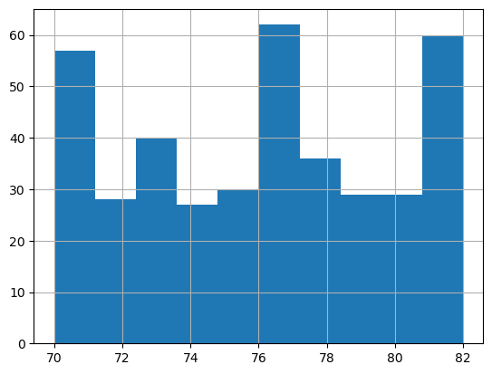
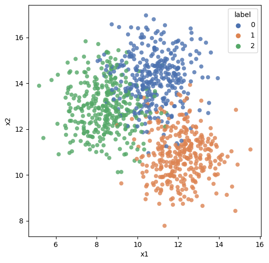
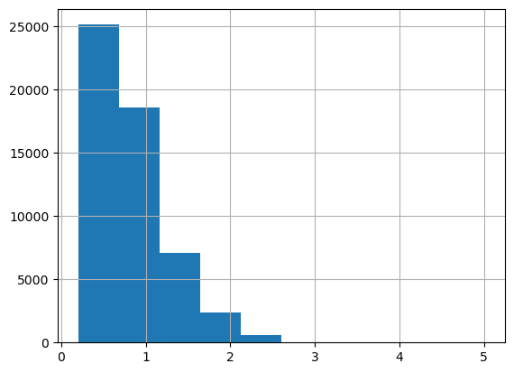
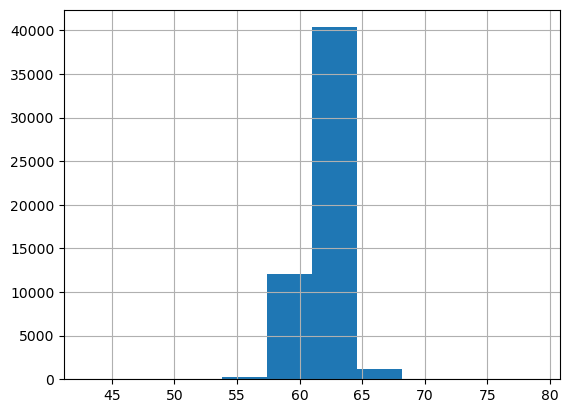
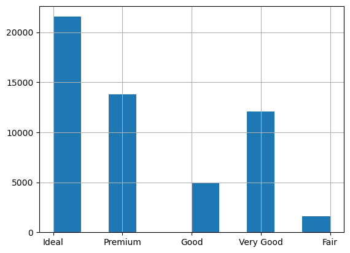
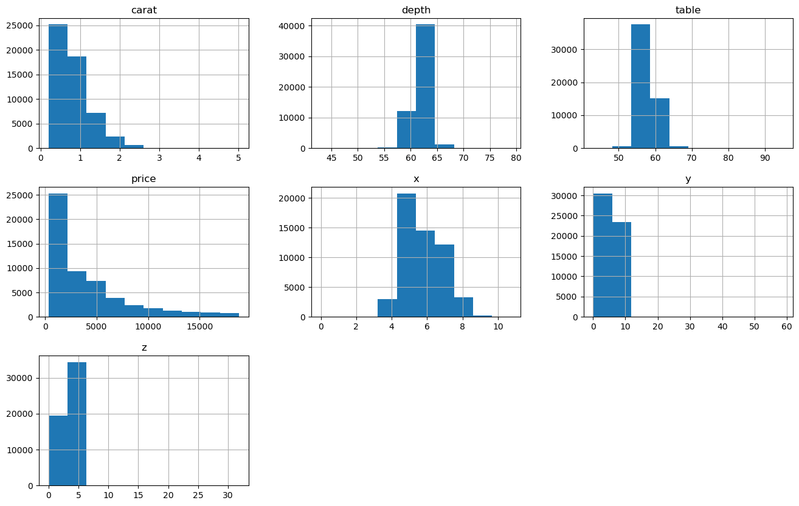
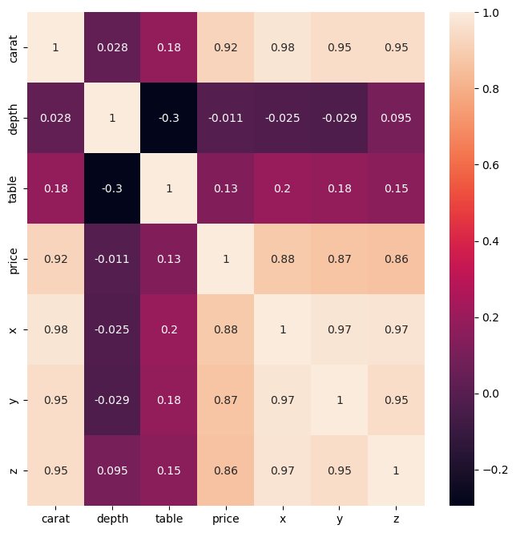
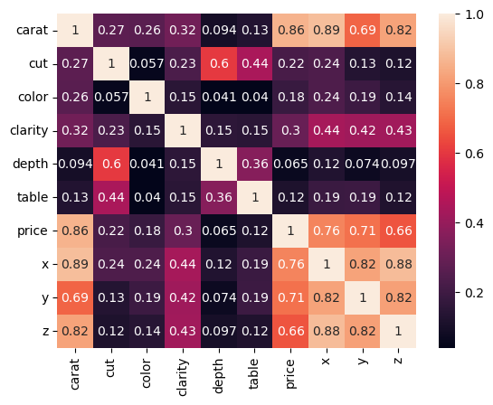

Exploratory Data Analysis
What is EDA?
EDA is the unstructured process of probing the data we haven’t seen before to understand more about it with a view to thinking about how we can use the data, and to discover what it reveals as insights at first glance.
At other times, we need to analyze some data with no particular objective in mind except to find out if it could be useful for anything at all.
Consider a situation where your manager points you to some data and asks you to do some analysis on it. The data could be in a Google Drive, or a Github repo, or on a thumb drive. It may have been received from a client, a customer or a vendor. You may have a high level pointer to what the data is, for example you may know there is order history data, or invoice data, or web log data. The ask may not be very specific, nor the goal clarified, but we would like to check the data out to see if there is something useful we can do with it.
In other situations, we are looking for something specific, and are looking for the right data to analyze. For example, we may be trying to to identify zip codes where to market our product. We may be able to get data that provides us information on income, consumption, population characteristics etc that could help us with our task. When we receive such data, we would like to find out if it is fit for purpose.
Inquiries to conduct
So when you get data that you do not know much about in advance, you start with exploratory data analysis, or EDA. Possible inquiries you might like to conduct are:
- How much data do we have - number of rows in the data?
- How many columns, or fields do we have in the dataset?
- Data types - which of the columns appear to be numeric, dates or strings?
- Names of the columns, and do they tell us anything?
- A visual review of a sample of the dataset
- Completeness of the dataset, are missing values obvious? Columns that are largely empty?
- Unique values for columns that appear to be categorical, and how many observations of each category?
- For numeric columns, the range of values (calculated from min and max values)
- Distributions for the different columns, possibly graphed
- Correlations between the different columns
Exploratory Data Analysis (EDA) is generally the first activity performed to get a high level understanding of new data. It employs a variety of graphical and summarization techniques to get a ‘sense of the data’.
The purpose of Exploratory Data Analysis is to interrogate the data in an open-minded way with a view to understanding the structure of the data, uncover any prominent themes, identify important variables, detect obvious anomalies, consider missing values, review data types, obtain a visual understanding of the distribution of the data, understand correlations between variables, etc. Not all these things can be discovered during EDA, but these are generally the things we look for when performing EDA.
EDA is unstructured exploration, there is not a defined set of activities you must perform. Generally, you probe the data, and depending upon what you discover, you ask more questions.
Introduction to Arrays
Arrays, or collection of numbers, are fundamental to analytics at scale. We will cover arrays from a NumPy lens exclusively, given how much NumPy dominates all array based manipulation.
NumPy is the underlying library for manipulating arrays in Python. And arrays are really important for analytics. The reason arrays are important is because many analytical algorithms will only accept arrays as input. Deep learning networks will exclusively accept only arrays as input, though arrays are called tensors in the deep learning world. In addition to this practical issue, data is much easier to manipulate, transform and perform mathematical operations on if it is expressed as an array.
NumPy underpins pandas as well as many other libraries. So we may not be using it a great deal, but there will be situations where numpy is unavoidable.
Below is a high level overview of what arrays are, and some basic array operations.
Multi-dimensional data
Arrays have structure in the form of dimensions, and numbers sit at the intersection of these dimensions. In a spreadsheet, you see two dimensions - one being the rows, represented as 1, 2, 3..., and the other the columns, repesented as A, B, C. Numpy arrays can have any number of dimensions, even though dimensions beyond the third are humanly impossible to visualize.
A numpy array when printed in Python encloses data for a dimension in square brackets. The fundamental unit of an array of any size is a single one-dimensional row where numbers are separated by commas and enclosed in a set of square brackets, for example, [1, 2, 3, 1]. Several of these will then be arranged within additional nested square brackets to make up the complete array. To understand the idea of an array, mentally visualize a 2-dimensional array similar to a spreadsheet. Every number within the array exists at the intersection of all of its dimensions. In Python, each position along a dimension, more commonly called an axis, is represented by numbers starting with the first element being 0. These positions are called indexes.
The number of square brackets [ gives the number of dimensions in the array. Two are represented on screen, the rows and columns, like a 2D matrix. But the screen is two-dimensional, and cannot display additional dimensions. Therefore all other dimensions appear as repeats of rows and columns - look at the example next. The last two dimensions, eg here 3, 4 represent rows and columns. The 2, the first one, means there are two sets of these rows and columns in the array!
Creating arrays with Numpy
Everything that Numpy touches ends as an array, just like everything from a pandas function is a dataframe. Easiest way to generate a random array is np.random.randn(2,3) which will give an array with dimensions 2,3. You can pick any other dimensions too. randn gives random normal numbers.
# import some libraries
import pandas as pd
import os
import random
import numpy as np
import scipy
import math
import joblib
# Create a one dimensional array
np.random.randn(4)
array([ 1.1736499 , 1.54772703, -0.21693701, 0.31459622])
# Create a 2-dimensional array with random normal variables
# np.random.seed(123)
np.random.randn(2,3)
array([[-0.4905774 , -1.47052507, -1.04379812],
[-0.20386335, 0.56686123, 1.16730192]])
# Create a 3-dimensional array with random integers
x = np.random.randint(low = 1, high = 5, size = (2,3,4))
print('Shape: ', x.shape)
x
Shape: (2, 3, 4)
array([[[3, 3, 2, 1],
[2, 1, 1, 2],
[1, 1, 1, 3]],
[[1, 4, 1, 1],
[3, 2, 1, 1],
[2, 4, 2, 3]]])
Numpy axes numbers run from left to right, starting with the index 0. So x.shape gives me 2, 3, 4 which means 2 is the 0th axis, 3 rows are the 1st axis and 4 columns are the 2nd axis.
The shape of the above array is (2, 3, 4)
axis = 0 means : (2, 3, 4)
axis = 1 means : (2, 3, 4)
axis = 2 means : (2, 3, 4)
# Create a 3-dimensional array
data = np.random.randn(2, 3, 4)
print('The shape of the array is:', data.shape)
data
The shape of the array is: (2, 3, 4)
array([[[-0.94207619, 0.85819949, 0.85937811, 0.03423557],
[ 0.43471567, -0.3977568 , -0.38560239, 1.37103135],
[-0.8236544 , -0.75445943, 0.34979668, 0.46855885]],
[[ 1.12936861, -0.44238069, 0.96649123, -1.36034059],
[ 0.64099078, 1.41112827, -0.58302938, 0.0526134 ],
[ 1.6253795 , 0.47798241, 0.53996765, -0.77834533]]])
The number of
[gives the number of dimensions in the array.
Two are represented on screen, the rows and columns. All others appear afterwards. The last two dimensions, eg here 3, 4 represent rows and columns. The 2, the first one, means there are two sets of these rows and columns in the array.
np.random.randn(4, 3, 2)
array([[[-1.84207847, -0.22688959],
[ 1.40275113, 0.74415778],
[-0.15042182, -0.75451819]],
[[ 0.58001497, 0.9170983 ],
[ 0.253829 , 1.08733683],
[-0.6430149 , 2.01905416]],
[[ 0.15379162, -0.07853098],
[-0.85224692, 0.25954211],
[ 0.0392591 , 0.29043794]],
[[-0.85687338, -0.90593571],
[-1.28917985, 0.25920641],
[ 1.48624977, -0.27429377]]])
# Now let us add another dimension. But this time random integers than random normal.
# The random integer function (randint) requires specifying low and high for the uniform distribution.
data = np.random.randint(low = 1, high = 100, size = (2,3,2,4))
data
array([[[[50, 35, 31, 23],
[67, 69, 34, 61]],
[[70, 83, 55, 30],
[47, 76, 54, 61]],
[[73, 14, 87, 13],
[ 8, 95, 6, 13]]],
[[[73, 33, 25, 83],
[48, 73, 44, 83]],
[[54, 24, 72, 3],
[ 1, 91, 30, 60]],
[[62, 39, 74, 77],
[14, 33, 8, 83]]]])
So there will be a collection of 2 rows x 4 columns matrices, repeated 3 times, and that entire set another 2 times.
And the 4 occurrences of [[[[ means there are 4 dimensions to the array.
type(data)
numpy.ndarray
# Converting a list to an array
list1 = list(range(12))
list1
[0, 1, 2, 3, 4, 5, 6, 7, 8, 9, 10, 11]
array1 = np.array(list1)
array1
array([ 0, 1, 2, 3, 4, 5, 6, 7, 8, 9, 10, 11])
# This array1 is one dimensional, let us convert to a 3x4 array.
array1.shape = (3,4)
array1
array([[ 0, 1, 2, 3],
[ 4, 5, 6, 7],
[ 8, 9, 10, 11]])
# Create arrays of zeros
array1 = np.zeros((2,3)) # The dimensions must be a tuple inside the brackets
array1
array([[0., 0., 0.],
[0., 0., 0.]])
# Create arrays from a range
array1 = np.arange((12))
array1
array([ 0, 1, 2, 3, 4, 5, 6, 7, 8, 9, 10, 11])
#You can reshape the dimensions of an array
array1.reshape(3,4)
array([[ 0, 1, 2, 3],
[ 4, 5, 6, 7],
[ 8, 9, 10, 11]])
array1.reshape(3,2,2)
array([[[ 0, 1],
[ 2, 3]],
[[ 4, 5],
[ 6, 7]],
[[ 8, 9],
[10, 11]]])
# Create an array of 1's
array1 = np.ones((3,5))
array1
array([[1., 1., 1., 1., 1.],
[1., 1., 1., 1., 1.],
[1., 1., 1., 1., 1.]])
# Creates the identity matrix
array1 = np.eye(4)
array1
array([[1., 0., 0., 0.],
[0., 1., 0., 0.],
[0., 0., 1., 0.],
[0., 0., 0., 1.]])
# Create an empty array - useful if you need a place to keep data that will be generated later in the code.
# It shows zeros but is actually empty
np.empty([2,3])
array([[6.23042070e-307, 4.67296746e-307, 1.69121096e-306],
[9.34609111e-307, 1.42413555e-306, 1.78019082e-306]])
Summarizing data along an axis
Putting the axis = n argument with a summarization function (eg, sum) makes the axis n disappear, having been summarized into the function's results, leaving only the rest of the dimensions. So np.sum(array_name, axis = n), similarly mean(), min(), median(), std() etc will calculate the aggregation function by collapsing all the elements of the selected axis number into one and performing that operation. See below using the sum function.
x = data = np.random.randint(low = 1, high = 100, size = (2,3))
x
array([[17, 58, 47],
[63, 98, 94]])
# So with axis = 0, the very first dimension, ie the 2 rows, will collapse leaving an array of shape (3,)
x.sum(axis = 0)
array([ 80, 156, 141])
# So with axis = 0, the very first dimension, ie the 2 rows, will collapse leaving an array of shape (2,)
x.sum(axis = 1)
array([122, 255])
Subsetting arrays ('slices')
Python starts numbering things starting with zero, which means the first item is the 0th item.
The portion of the dimension you wish to select is given in the form start:finish where the start element is included, but the finish is excluded. So 1:3 means include 1 and 2 but not 3.
: means include everything
array1 = np.random.randint(0, 100, (3,5))
array1
array([[46, 19, 51, 42, 76],
[80, 27, 40, 28, 81],
[34, 37, 87, 93, 97]])
array1[0:2, 0:2]
array([[46, 19],
[80, 27]])
array1[:,0:2] # ':' means include everything
array([[46, 19],
[80, 27],
[34, 37]])
array1[0:2]
array([[46, 19, 51, 42, 76],
[80, 27, 40, 28, 81]])
#Slices are references to the original array. So you if you need a copy, use the below:
array1[0:2].copy()
array([[46, 19, 51, 42, 76],
[80, 27, 40, 28, 81]])
Generally, use the above 'Long Form' way for slicing where you specify the indices for each dimension. Where everything is to be included, use :. There are other short-cut methods of slicing, but can leave those as is.
Imagine an array a1 with dimensions (3, 5, 2, 4). This means: - This array has 3 arrays in it that have the dimensions (5, 2, 4) - Each of these 3 arrays have 5 additional arrays each in them of the dimension (2,4). (So there are 3*5=15 of these 2x4 arrays) - Each of these (2,4) arrays has 2 one-dimensional arrays with 4 columns.
If in the slice notation only a portion of what to include is specified, eg a1[0], then it means we are asking for the first one of these axes, ie the dimension parameters are specifying from the left of (3, 5, 2, 4). It means give me the first of the 3 arrays with size (5,2,4).
If the slice notation says a1[0,1], then it means 0th element of the first dim, and 1st element of the second dim.
Check it out using the following code:
a1 = np.random.randint(0, 100, (3,4,2,5))
a1
array([[[[59, 41, 61, 8, 39],
[73, 32, 61, 51, 6]],
[[69, 3, 25, 8, 46],
[67, 65, 13, 83, 88]],
[[79, 17, 61, 24, 86],
[97, 47, 49, 53, 55]],
[[77, 52, 43, 40, 74],
[51, 39, 97, 66, 19]]],
[[[54, 88, 81, 40, 95],
[74, 61, 27, 53, 92]],
[[ 9, 57, 21, 87, 73],
[99, 6, 77, 63, 76]],
[[73, 31, 94, 85, 65],
[95, 78, 27, 83, 44]],
[[75, 63, 71, 49, 43],
[54, 4, 93, 75, 70]]],
[[[87, 0, 13, 69, 0],
[81, 13, 88, 24, 36]],
[[21, 19, 30, 32, 55],
[40, 21, 74, 89, 68]],
[[80, 34, 75, 13, 9],
[63, 19, 73, 12, 47]],
[[27, 29, 45, 65, 43],
[83, 21, 11, 45, 6]]]])
a1[0].shape
(4, 2, 5)
a1[0]
array([[[59, 41, 61, 8, 39],
[73, 32, 61, 51, 6]],
[[69, 3, 25, 8, 46],
[67, 65, 13, 83, 88]],
[[79, 17, 61, 24, 86],
[97, 47, 49, 53, 55]],
[[77, 52, 43, 40, 74],
[51, 39, 97, 66, 19]]])
a1[0,1]
array([[69, 3, 25, 8, 46],
[67, 65, 13, 83, 88]])
More slicing: Picking selected rows or columns
a1 = np.random.randint(0, 100, (8,9))
a1
array([[44, 78, 29, 91, 82, 86, 76, 3, 90],
[69, 96, 29, 79, 25, 47, 95, 87, 85],
[79, 42, 99, 88, 14, 38, 47, 62, 41],
[39, 98, 27, 95, 65, 2, 59, 72, 16],
[46, 44, 55, 65, 32, 5, 79, 40, 65],
[38, 76, 78, 8, 76, 35, 27, 32, 51],
[58, 75, 3, 99, 23, 73, 77, 12, 39],
[66, 43, 58, 35, 33, 85, 75, 8, 10]])
# Select the first row
a1[0]
array([44, 78, 29, 91, 82, 86, 76, 3, 90])
# Select the fourth row
a1[3]
array([39, 98, 27, 95, 65, 2, 59, 72, 16])
# Select the first and the fourth row together
a1[[0,3]]
array([[44, 78, 29, 91, 82, 86, 76, 3, 90],
[39, 98, 27, 95, 65, 2, 59, 72, 16]])
# Select the first and the fourth column
a1[:,[0,3]]
array([[44, 91],
[69, 79],
[79, 88],
[39, 95],
[46, 65],
[38, 8],
[58, 99],
[66, 35]])
# Select subset of named rows and columns
a1[[0, 3]][:,[0, 1]] # Named rows and columns.
# Note that a1[[0, 3],[0, 1]] does not work as expected, it selects two points (0,0)and (3,1).
# Really crazy but it is what it is.
array([[44, 78],
[39, 98]])
### Operations on arrays All math on arrays is element wise, and scalars are multiplied/added with each element.
array1 + 4
array([[68, 82, 45, 28, 15],
[86, 33, 19, 37, 21],
[29, 72, 94, 70, 62]])
array1 > np.random.randint(0, 2, (3,5))
array([[ True, True, True, True, True],
[ True, True, True, True, True],
[ True, True, True, True, True]])
array1 + 2
array([[66, 80, 43, 26, 13],
[84, 31, 17, 35, 19],
[27, 70, 92, 68, 60]])
np.sum(array1) # adds all the elements of an array
701
np.sum(array1, axis = 0) # adds all elements of the array along a particular axis
array([171, 175, 146, 123, 86])
Matrix math
Numpy has arrays as well as matrices. Matrices are 2D, arrays can have any number of dimensions. The only real difference between a matrix (type = numpy.matrix) and an array (type = numpy.ndarray) is that all array operations are element wise, ie the special R x C matrix multiplication does not apply to arrays. However, for an array that is 2 x 2 in shape you can use the @ operator to do matrix math.
So that leaves matrices and arrays interchangeable in a practical sense. Except that you can't do an inverse of an array using .I which you can for a matrix.
# Create a matrix 'm' and an array 'a' that are identical
m = np.matrix(np.random.randint(0,10,(3,3)))
a = np.array(m)
m
matrix([[4, 2, 7],
[7, 0, 2],
[9, 3, 4]])
a
array([[4, 2, 7],
[7, 0, 2],
[9, 3, 4]])
Transpose with a .T
m.T
matrix([[4, 7, 9],
[2, 0, 3],
[7, 2, 4]])
a.T
array([[4, 7, 9],
[2, 0, 3],
[7, 2, 4]])
Inverse with a .I
Does not work for arrays
m.I
matrix([[-0.05825243, 0.12621359, 0.03883495],
[-0.09708738, -0.45631068, 0.39805825],
[ 0.2038835 , 0.05825243, -0.13592233]])
Matrix multiplication
For matrices, just a * suffices for matrix multiplication. If using arrays, use @ for matrix multiplication, which also works for matrices. So just to be safe, just use @.
Dot-product is the same as row-by-column matrix multiplication, and is not elementwise.
a=np.matrix([[4, 3], [2, 1]])
b=np.mat([[1, 2], [3, 4]])
a
matrix([[4, 3],
[2, 1]])
b
matrix([[1, 2],
[3, 4]])
a*b
matrix([[13, 20],
[ 5, 8]])
a@b
matrix([[13, 20],
[ 5, 8]])
# Now check with arrays
a=np.array([[4, 3], [2, 1]])
b=np.array([[1, 2], [3, 4]])
a@b # does matrix multiplication.
array([[13, 20],
[ 5, 8]])
a
array([[4, 3],
[2, 1]])
b
array([[1, 2],
[3, 4]])
a*b # element-wise multiplication as a and b are arrays
array([[4, 6],
[6, 4]])
@ is the same as np.dot(a, b), which is just a longer fully spelled out function.
np.dot(a,b)
array([[13, 20],
[ 5, 8]])
Exponents with matrices and arrays **.
a = np.array([[4, 3], [2, 1]])
m = np.matrix(a)
m
matrix([[4, 3],
[2, 1]])
a**2 # Because a is an array, this will square each element of a.
array([[16, 9],
[ 4, 1]], dtype=int32)
m**2 # Because m is a matrix, this will be read as m*m, and dot product of the matrix with itself will result.
matrix([[22, 15],
[10, 7]])
which is same as a@a
a@a
array([[22, 15],
[10, 7]])
Modulus, or size
The modulus is just sqrt(a^2 + b^2 + ....n^2), where a, b...n are elements of the vector, matrix or array. Can be calculated using np.linalg.norm(a)
a = np.array([4,3,2,1])
np.linalg.norm(a)
5.477225575051661
# Same as calculating manually
(4**2 + 3**2 + 2**2 + 1**2) ** 0.5
5.477225575051661
b
array([[1, 2],
[3, 4]])
np.linalg.norm(b)
5.477225575051661
m
matrix([[4, 3],
[2, 1]])
np.linalg.norm(m)
5.477225575051661
m = np.matrix(np.random.randint(0,10,(3,3)))
m
matrix([[1, 4, 5],
[2, 3, 6],
[4, 6, 6]])
np.linalg.norm(m)
13.379088160259652
print(np.ravel(m))
print(type(np.ravel(m)))
print('Manual calculation for norm')
((np.ravel(m)**2).sum())**.5
[1 4 5 2 3 6 4 6 6]
<class 'numpy.ndarray'>
Manual calculation for norm
13.379088160259652
Determinant of a matrix np.linalg.det(a)
Used for calculating the inverse of a matrix, and only applies to square matrices.
np.linalg.det(m)
30.000000000000014
Converting from matrix to array and vice-versa
np.asmatrix and np.asarray allow you to convert one to the other. Though above we have just used np.array and np.matrix without any issue.
The above references: https://stackoverflow.com/questions/4151128/what-are-the-differences-between-numpy-arrays-and-matrices-which-one-should-i-u
Distances and angles between vectors
Size of a vector, angle between vectors, distance between vectors
# We set up two vectors a and b
a = np.array([1,2,3]); b = np.array([5,4,3])
print('a =',a)
print('b =',b)
a = [1 2 3]
b = [5 4 3]
# Size of the vector, computed as the root of the squares of each of the elements
np.linalg.norm(a)
3.7416573867739413
# Distance between two vectors
np.linalg.norm(a - b)
4.47213595499958
# Which is the same as
print(np.sqrt(np.dot(a, a) - 2 * np.dot(a, b) + np.dot(b, b)))
(a@a + b@b - 2*a@b)**.5
4.47213595499958
4.47213595499958
# Combine the two vectors
X = np.concatenate((a,b)).reshape(2,3)
X
array([[1, 2, 3],
[5, 4, 3]])
# Euclidean distance is the default metric for this function
# from sklearn
from sklearn.metrics import pairwise_distances
pairwise_distances(X)
array([[0. , 4.47213595],
[4.47213595, 0. ]])
# Angle in radians between two vectors. To get the
# answer in degrees, multiply by 180/pi, or 180/math.pi (after import math). Also there is a function in math called
# math.radians to get radians from degrees, or math.degrees(x) to convert angle x from radians to degrees.
import math
angle_in_radians = np.arccos(np.dot(a,b) / (np.linalg.norm(a) * np.linalg.norm(b)))
angle_in_degrees = math.degrees(angle_in_radians)
print('Angle in degrees =', angle_in_degrees)
print('Angle in radians =', angle_in_radians)
Angle in degrees = 33.74461333141198
Angle in radians = 0.5889546074455115
# Same as above using math.acos instead of np.arccos
math.acos(np.dot(a,b) / (np.linalg.norm(a) * np.linalg.norm(b)))
0.5889546074455115
Sorting with argsort
Which is the same as sort, but shows index numbers instead of the values
# We set up an array
a = np.array([20,10,30,0])
# Sorted indices
np.argsort(a)
array([3, 1, 0, 2], dtype=int64)
# Using the indices to get the sorted values
a[np.argsort(a)]
array([ 0, 10, 20, 30])
# Descending sort indices
np.argsort(a)[::-1]
array([2, 0, 1, 3], dtype=int64)
# Descending sort values
a[np.argsort(a)[::-1]]
array([30, 20, 10, 0])
Understanding DataFrames
As we discussed in the prior section, understanding and manipulating arrays of numbers is fundamental to the data science process. This is because nearly all ML and AI algorithms insist on being provided data arrays as inputs, and the NumPy library underpins almost all of data science.
As we discussed, a NumPy array is essentially a collection of numbers. This collection is organized along ‘dimensions’. So NumPy objects are n-dimensional array objects, or ndarray, a fast and efficient container for large datasets in Python.
But arrays have several limitations. One huge limitation is that they are raw containers with numbers, they don't have 'headers', or labels that describe the columns, rows, or the additional dimensions. This means we need to track separately somewhere what each of the dimensions mean. Another limitation is that after 3 dimensions, the additional dimensions are impossible toto visualize in the human mind. For most practical purposes, humans like to think of data in the tabular form, with just rows and columns. If there are more dimensions, one can have multiple tables.
This is where pandas steps in. Pandas use dataframes, or a spreadsheet like construct where there are rows and columns, and these rows and columns can have names or headings. Pandas dataframes are easily converted to NumPy arrays, and algorithms will mostly accept a dataframe as an input just as they would an array.
Exploring Tabular Data with Pandas
Tabular data is often the most common data type that is encountered, though ‘unstructured’ data is increasingly becoming common. Tabular data is two dimensional data – with rows and columns. The columns are defined and understood, and we generally understand what they contain.
- Data is laid out as a 2-dimensional matrix, whether in a spreadsheet, or R/Python dataframes, or in a database table.
- Rows generally represent individual observations, while columns are the fields/variables.
- Variables can be numeric, or categorical.
- Numerical variables can be integers, floats etc, and are continuous.
- Categorical variables may be cardinal (eg, species, gender), or ordinal (eg, low, medium, high), and belong to a discrete set.
- Categorical variables are also called factors, and levels.
- Algorithms often require categorical variables to be converted to numerical variables.
Unstructured data includes audio, video and other kinds of data that is useful for problems of perception. Unstructured data will almost invariably need to be converted into structured arrays with defined dimensions, but for the moment we will skip that.
Reading data with Pandas
Pandas offer several different functions for reading different types of data.
read_csv: Load comma separated files
read_table: Load tab separated files
read_fwf: Read data in fixed-width column format (i.e., no delimiters)
read_clipboardRead data from the clipboard; useful for converting tables from web pages
read_excel: Read Excel files
read_html: Read all tables found in the given HTML document
read_json: Read data from a JSON (JavaScript Object Notation) file
read_pickle: Read a pickle file
read_sql: Read results of an SQL query
read_sas: Read SAS files
Other data types in Python
- Lists are represented as
[]. Lists are a changeable collection of elements, and the elements can be any Python data, eg strings, numbers, dictionaries, or even other lists. - Dictionaries are enclosed in
{}. These are 'key:value' pairs, where 'key' is almost like a name given to a 'value'. - Sets are also enclosed in
{}, except they don't have the colons separating the key:value pairs. These are collections of items, and they are unordered. - Tuples are collections of variables, and enclosed in
(). They are different from sets in that they are unchangeable.
# Example - creating a list
empty_list = []
list1 = ['a', 2,4, 'python']
list1
['a', 2, 4, 'python']
# Example - creating a dictionary
dict1 = {'first': ['John', 'Jane'], 'something_else': (1,2,3)}
dict1
{'first': ['John', 'Jane'], 'something_else': (1, 2, 3)}
dict1['first']
['John', 'Jane']
dict1['something_else']
(1, 2, 3)
# Checking the data type of the new variable we created
type(dict1)
dict
# Checking the data type
type(list1)
list
# Set operations
set1 = {1,2,4,5} # Sets can do intersect, union and difference
# Tuple example
tuple1 = 1, 3, 4 # or
tuple1 = (1, 3, 4)
tuple1
(1, 3, 4)
Loading built-in data sets in Python
Before we move forward with getting into the details with EDA, we will first take a small digressive detour to talk about data sets.
In order to experiment with EDA, we need some data. We can bring our own data, but for exploration and experimentation, it is often easy to load up one of the many in-built datasets accessible through Python. These datasets cover the spectrum - from really small datasets to those with many thousands of records, and include text data such as movie reviews and tweets.
We will leverage these built in datasets for the rest of the discussion as they provide a good path to creating reproducible examples. These datasets are great for experimenting, testing, doing tutorials and exercises.
The next few headings will cover these in-built datasets.
- The Statsmodels library provides access to several interesting inbuilt datasets in Python.
- The datasets available in R can also be accessed through statsmodels.
- The Seaborn library has several toy datasets available to explore.
- The Scikit Learn (sklearn) library also has in-built datasets.
- Scikit Learn also provides a function to generate random datasets with described characteristics (
make_blobsfunction)
In the rest of this discussion, we will use these data sets and explore the data.
Some of these are described below, together with information on how to access and use such datasets.
# Load the regular libraries
import pandas as pd
import numpy as np
import seaborn as sns
import matplotlib.pyplot as plt
Loading data from Statsmodels
Statsmodels allows access to several datasets for use in examples, model testing, tutorials, testing functions etc. These can be accessed using sm.datasets.macrodata.load_pandas()['data'], where macrodata is just one example of a dataset. Pressing TAB after sm.datasets should bring up a pick-list of datasets to choose from.
The commands print(sm.datasets.macrodata.DESCRLONG) and print(sm.datasets.macrodata.NOTE) provide additional details on the datasets.
# Load macro economic data from Statsmodels
import statsmodels.api as sm
df = sm.datasets.macrodata.load_pandas()['data']
df
| year | quarter | realgdp | realcons | realinv | realgovt | realdpi | cpi | m1 | tbilrate | unemp | pop | infl | realint | |
|---|---|---|---|---|---|---|---|---|---|---|---|---|---|---|
| 0 | 1959.0 | 1.0 | 2710.349 | 1707.4 | 286.898 | 470.045 | 1886.9 | 28.980 | 139.7 | 2.82 | 5.8 | 177.146 | 0.00 | 0.00 |
| 1 | 1959.0 | 2.0 | 2778.801 | 1733.7 | 310.859 | 481.301 | 1919.7 | 29.150 | 141.7 | 3.08 | 5.1 | 177.830 | 2.34 | 0.74 |
| 2 | 1959.0 | 3.0 | 2775.488 | 1751.8 | 289.226 | 491.260 | 1916.4 | 29.350 | 140.5 | 3.82 | 5.3 | 178.657 | 2.74 | 1.09 |
| 3 | 1959.0 | 4.0 | 2785.204 | 1753.7 | 299.356 | 484.052 | 1931.3 | 29.370 | 140.0 | 4.33 | 5.6 | 179.386 | 0.27 | 4.06 |
| 4 | 1960.0 | 1.0 | 2847.699 | 1770.5 | 331.722 | 462.199 | 1955.5 | 29.540 | 139.6 | 3.50 | 5.2 | 180.007 | 2.31 | 1.19 |
| ... | ... | ... | ... | ... | ... | ... | ... | ... | ... | ... | ... | ... | ... | ... |
| 198 | 2008.0 | 3.0 | 13324.600 | 9267.7 | 1990.693 | 991.551 | 9838.3 | 216.889 | 1474.7 | 1.17 | 6.0 | 305.270 | -3.16 | 4.33 |
| 199 | 2008.0 | 4.0 | 13141.920 | 9195.3 | 1857.661 | 1007.273 | 9920.4 | 212.174 | 1576.5 | 0.12 | 6.9 | 305.952 | -8.79 | 8.91 |
| 200 | 2009.0 | 1.0 | 12925.410 | 9209.2 | 1558.494 | 996.287 | 9926.4 | 212.671 | 1592.8 | 0.22 | 8.1 | 306.547 | 0.94 | -0.71 |
| 201 | 2009.0 | 2.0 | 12901.504 | 9189.0 | 1456.678 | 1023.528 | 10077.5 | 214.469 | 1653.6 | 0.18 | 9.2 | 307.226 | 3.37 | -3.19 |
| 202 | 2009.0 | 3.0 | 12990.341 | 9256.0 | 1486.398 | 1044.088 | 10040.6 | 216.385 | 1673.9 | 0.12 | 9.6 | 308.013 | 3.56 | -3.44 |
203 rows × 14 columns
# Print the description of the data
print(sm.datasets.macrodata.DESCRLONG)
US Macroeconomic Data for 1959Q1 - 2009Q3
# Print the data-dictionary for the different columns/fields in the data
print(sm.datasets.macrodata.NOTE)
::
Number of Observations - 203
Number of Variables - 14
Variable name definitions::
year - 1959q1 - 2009q3
quarter - 1-4
realgdp - Real gross domestic product (Bil. of chained 2005 US$,
seasonally adjusted annual rate)
realcons - Real personal consumption expenditures (Bil. of chained
2005 US$, seasonally adjusted annual rate)
realinv - Real gross private domestic investment (Bil. of chained
2005 US$, seasonally adjusted annual rate)
realgovt - Real federal consumption expenditures & gross investment
(Bil. of chained 2005 US$, seasonally adjusted annual rate)
realdpi - Real private disposable income (Bil. of chained 2005
US$, seasonally adjusted annual rate)
cpi - End of the quarter consumer price index for all urban
consumers: all items (1982-84 = 100, seasonally adjusted).
m1 - End of the quarter M1 nominal money stock (Seasonally
adjusted)
tbilrate - Quarterly monthly average of the monthly 3-month
treasury bill: secondary market rate
unemp - Seasonally adjusted unemployment rate (%)
pop - End of the quarter total population: all ages incl. armed
forces over seas
infl - Inflation rate (ln(cpi_{t}/cpi_{t-1}) * 400)
realint - Real interest rate (tbilrate - infl)
Importing R datasets using Statsmodels
Datasets available in R can also be imported using the command sm.datasets.get_rdataset('mtcars').data, where mtcards can be replaced by the appropriate dataset name.
# Import the mtcars dataset which contains attributes for 32 models of cars
mtcars = sm.datasets.get_rdataset('mtcars').data
mtcars.to_excel('mtcars.xlsx')
mtcars.describe()
| mpg | cyl | disp | hp | drat | wt | qsec | vs | am | gear | carb | |
|---|---|---|---|---|---|---|---|---|---|---|---|
| count | 32.000000 | 32.000000 | 32.000000 | 32.000000 | 32.000000 | 32.000000 | 32.000000 | 32.000000 | 32.000000 | 32.000000 | 32.0000 |
| mean | 20.090625 | 6.187500 | 230.721875 | 146.687500 | 3.596563 | 3.217250 | 17.848750 | 0.437500 | 0.406250 | 3.687500 | 2.8125 |
| std | 6.026948 | 1.785922 | 123.938694 | 68.562868 | 0.534679 | 0.978457 | 1.786943 | 0.504016 | 0.498991 | 0.737804 | 1.6152 |
| min | 10.400000 | 4.000000 | 71.100000 | 52.000000 | 2.760000 | 1.513000 | 14.500000 | 0.000000 | 0.000000 | 3.000000 | 1.0000 |
| 25% | 15.425000 | 4.000000 | 120.825000 | 96.500000 | 3.080000 | 2.581250 | 16.892500 | 0.000000 | 0.000000 | 3.000000 | 2.0000 |
| 50% | 19.200000 | 6.000000 | 196.300000 | 123.000000 | 3.695000 | 3.325000 | 17.710000 | 0.000000 | 0.000000 | 4.000000 | 2.0000 |
| 75% | 22.800000 | 8.000000 | 326.000000 | 180.000000 | 3.920000 | 3.610000 | 18.900000 | 1.000000 | 1.000000 | 4.000000 | 4.0000 |
| max | 33.900000 | 8.000000 | 472.000000 | 335.000000 | 4.930000 | 5.424000 | 22.900000 | 1.000000 | 1.000000 | 5.000000 | 8.0000 |
# Load the famous Iris dataset
iris = sm.datasets.get_rdataset('iris').data
iris
| Sepal.Length | Sepal.Width | Petal.Length | Petal.Width | Species | |
|---|---|---|---|---|---|
| 0 | 5.1 | 3.5 | 1.4 | 0.2 | setosa |
| 1 | 4.9 | 3.0 | 1.4 | 0.2 | setosa |
| 2 | 4.7 | 3.2 | 1.3 | 0.2 | setosa |
| 3 | 4.6 | 3.1 | 1.5 | 0.2 | setosa |
| 4 | 5.0 | 3.6 | 1.4 | 0.2 | setosa |
| ... | ... | ... | ... | ... | ... |
| 145 | 6.7 | 3.0 | 5.2 | 2.3 | virginica |
| 146 | 6.3 | 2.5 | 5.0 | 1.9 | virginica |
| 147 | 6.5 | 3.0 | 5.2 | 2.0 | virginica |
| 148 | 6.2 | 3.4 | 5.4 | 2.3 | virginica |
| 149 | 5.9 | 3.0 | 5.1 | 1.8 | virginica |
150 rows × 5 columns
Datasets in Seaborn
Several datasets are accessible through the Seaborn library
# Get the names of all the datasets that are available through Seaborn
import seaborn as sns
sns.get_dataset_names()
['anagrams',
'anscombe',
'attention',
'brain_networks',
'car_crashes',
'diamonds',
'dots',
'dowjones',
'exercise',
'flights',
'fmri',
'geyser',
'glue',
'healthexp',
'iris',
'mpg',
'penguins',
'planets',
'seaice',
'taxis',
'tips',
'titanic']
# Load the diamonds dataset
diamonds = sns.load_dataset('diamonds')
diamonds.head(20)
| carat | cut | color | clarity | depth | table | price | x | y | z | |
|---|---|---|---|---|---|---|---|---|---|---|
| 0 | 0.23 | Ideal | E | SI2 | 61.5 | 55.0 | 326 | 3.95 | 3.98 | 2.43 |
| 1 | 0.21 | Premium | E | SI1 | 59.8 | 61.0 | 326 | 3.89 | 3.84 | 2.31 |
| 2 | 0.23 | Good | E | VS1 | 56.9 | 65.0 | 327 | 4.05 | 4.07 | 2.31 |
| 3 | 0.29 | Premium | I | VS2 | 62.4 | 58.0 | 334 | 4.20 | 4.23 | 2.63 |
| 4 | 0.31 | Good | J | SI2 | 63.3 | 58.0 | 335 | 4.34 | 4.35 | 2.75 |
| 5 | 0.24 | Very Good | J | VVS2 | 62.8 | 57.0 | 336 | 3.94 | 3.96 | 2.48 |
| 6 | 0.24 | Very Good | I | VVS1 | 62.3 | 57.0 | 336 | 3.95 | 3.98 | 2.47 |
| 7 | 0.26 | Very Good | H | SI1 | 61.9 | 55.0 | 337 | 4.07 | 4.11 | 2.53 |
| 8 | 0.22 | Fair | E | VS2 | 65.1 | 61.0 | 337 | 3.87 | 3.78 | 2.49 |
| 9 | 0.23 | Very Good | H | VS1 | 59.4 | 61.0 | 338 | 4.00 | 4.05 | 2.39 |
| 10 | 0.30 | Good | J | SI1 | 64.0 | 55.0 | 339 | 4.25 | 4.28 | 2.73 |
| 11 | 0.23 | Ideal | J | VS1 | 62.8 | 56.0 | 340 | 3.93 | 3.90 | 2.46 |
| 12 | 0.22 | Premium | F | SI1 | 60.4 | 61.0 | 342 | 3.88 | 3.84 | 2.33 |
| 13 | 0.31 | Ideal | J | SI2 | 62.2 | 54.0 | 344 | 4.35 | 4.37 | 2.71 |
| 14 | 0.20 | Premium | E | SI2 | 60.2 | 62.0 | 345 | 3.79 | 3.75 | 2.27 |
| 15 | 0.32 | Premium | E | I1 | 60.9 | 58.0 | 345 | 4.38 | 4.42 | 2.68 |
| 16 | 0.30 | Ideal | I | SI2 | 62.0 | 54.0 | 348 | 4.31 | 4.34 | 2.68 |
| 17 | 0.30 | Good | J | SI1 | 63.4 | 54.0 | 351 | 4.23 | 4.29 | 2.70 |
| 18 | 0.30 | Good | J | SI1 | 63.8 | 56.0 | 351 | 4.23 | 4.26 | 2.71 |
| 19 | 0.30 | Very Good | J | SI1 | 62.7 | 59.0 | 351 | 4.21 | 4.27 | 2.66 |
# Load the mpg dataset from Seaborn. This is similar to the mtcars dataset,
# but has a higher count of observations.
sns.load_dataset('mpg')
| mpg | cylinders | displacement | horsepower | weight | acceleration | model_year | origin | name | |
|---|---|---|---|---|---|---|---|---|---|
| 0 | 18.0 | 8 | 307.0 | 130.0 | 3504 | 12.0 | 70 | usa | chevrolet chevelle malibu |
| 1 | 15.0 | 8 | 350.0 | 165.0 | 3693 | 11.5 | 70 | usa | buick skylark 320 |
| 2 | 18.0 | 8 | 318.0 | 150.0 | 3436 | 11.0 | 70 | usa | plymouth satellite |
| 3 | 16.0 | 8 | 304.0 | 150.0 | 3433 | 12.0 | 70 | usa | amc rebel sst |
| 4 | 17.0 | 8 | 302.0 | 140.0 | 3449 | 10.5 | 70 | usa | ford torino |
| ... | ... | ... | ... | ... | ... | ... | ... | ... | ... |
| 393 | 27.0 | 4 | 140.0 | 86.0 | 2790 | 15.6 | 82 | usa | ford mustang gl |
| 394 | 44.0 | 4 | 97.0 | 52.0 | 2130 | 24.6 | 82 | europe | vw pickup |
| 395 | 32.0 | 4 | 135.0 | 84.0 | 2295 | 11.6 | 82 | usa | dodge rampage |
| 396 | 28.0 | 4 | 120.0 | 79.0 | 2625 | 18.6 | 82 | usa | ford ranger |
| 397 | 31.0 | 4 | 119.0 | 82.0 | 2720 | 19.4 | 82 | usa | chevy s-10 |
398 rows × 9 columns
# Look at how many cars from each country in the mpg dataset
sns.load_dataset('mpg').origin.value_counts()
usa 249
japan 79
europe 70
Name: origin, dtype: int64
# Build a histogram of the model year
sns.load_dataset('mpg').model_year.astype('category').hist();

# Create a random dataframe with random data
n = 25
df = pd.DataFrame(
{'state': list(np.random.choice(["New York", "Florida", "California"], size=(n))),
'gender': list(np.random.choice(["Male", "Female"], size=(n), p=[.4, .6])),
'education': list(np.random.choice(["High School", "Undergrad", "Grad"], size=(n))),
'housing': list(np.random.choice(["Rent", "Own"], size=(n))),
'height': list(np.random.randint(140,200,n)),
'weight': list(np.random.randint(100,150,n)),
'income': list(np.random.randint(50,250,n)),
'computers': list(np.random.randint(0,6,n))
})
df
| state | gender | education | housing | height | weight | income | computers | |
|---|---|---|---|---|---|---|---|---|
| 0 | California | Female | High School | Own | 190 | 119 | 111 | 0 |
| 1 | California | Female | High School | Own | 140 | 126 | 232 | 2 |
| 2 | New York | Female | High School | Rent | 169 | 123 | 111 | 1 |
| 3 | California | Female | High School | Own | 152 | 147 | 123 | 1 |
| 4 | New York | Female | Undergrad | Own | 197 | 111 | 206 | 4 |
| 5 | New York | Male | Grad | Own | 187 | 144 | 87 | 4 |
| 6 | California | Female | High School | Own | 189 | 115 | 75 | 5 |
| 7 | New York | Female | Undergrad | Own | 197 | 117 | 195 | 0 |
| 8 | Florida | Female | Grad | Own | 146 | 127 | 244 | 5 |
| 9 | New York | Female | Undergrad | Rent | 194 | 106 | 138 | 3 |
| 10 | New York | Female | Undergrad | Rent | 181 | 101 | 206 | 2 |
| 11 | California | Female | Undergrad | Rent | 156 | 121 | 243 | 3 |
| 12 | Florida | Male | Grad | Own | 184 | 143 | 129 | 0 |
| 13 | New York | Male | Grad | Own | 168 | 106 | 176 | 3 |
| 14 | New York | Female | Undergrad | Own | 141 | 112 | 225 | 4 |
| 15 | New York | Female | Undergrad | Rent | 171 | 105 | 66 | 5 |
| 16 | Florida | Female | Grad | Rent | 155 | 126 | 233 | 5 |
| 17 | California | Female | Undergrad | Rent | 193 | 106 | 162 | 4 |
| 18 | New York | Male | High School | Rent | 179 | 107 | 187 | 5 |
| 19 | California | Female | Undergrad | Own | 186 | 125 | 79 | 1 |
| 20 | California | Female | Grad | Own | 157 | 102 | 183 | 4 |
| 21 | Florida | Male | Undergrad | Rent | 174 | 109 | 94 | 5 |
| 22 | New York | Female | Grad | Own | 162 | 107 | 140 | 1 |
| 23 | New York | Female | Grad | Rent | 198 | 142 | 193 | 4 |
| 24 | Florida | Male | High School | Rent | 174 | 115 | 55 | 1 |
# Load the 'Old Faithful' eruption data
sns.load_dataset('geyser')
| duration | waiting | kind | |
|---|---|---|---|
| 0 | 3.600 | 79 | long |
| 1 | 1.800 | 54 | short |
| 2 | 3.333 | 74 | long |
| 3 | 2.283 | 62 | short |
| 4 | 4.533 | 85 | long |
| ... | ... | ... | ... |
| 267 | 4.117 | 81 | long |
| 268 | 2.150 | 46 | short |
| 269 | 4.417 | 90 | long |
| 270 | 1.817 | 46 | short |
| 271 | 4.467 | 74 | long |
272 rows × 3 columns
Datasets in sklearn
Scikit Learn has several datasets that are built-in as well that can be used to experiment with functions and algorithms. Some are listed below:
load_boston(*[, return_X_y]) Load and return the boston house-prices dataset (regression).
load_iris(*[, return_X_y, as_frame]) Load and return the iris dataset (classification).
load_diabetes(*[, return_X_y, as_frame]) Load and return the diabetes dataset (regression).
load_digits(*[, n_class, return_X_y, as_frame]) Load and return the digits dataset (classification).
load_linnerud(*[, return_X_y, as_frame]) Load and return the physical excercise linnerud dataset.
load_wine(*[, return_X_y, as_frame]) Load and return the wine dataset (classification).
load_breast_cancer(*[, return_X_y, as_frame]) Load and return the breast cancer wisconsin dataset (classification).
Let us import the wine dataset next, and the California housing datset after that.
from sklearn import datasets
X = datasets.load_wine()['data']
y = datasets.load_wine()['target']
features = datasets.load_wine()['feature_names']
DESCR = datasets.load_wine()['DESCR']
classes = datasets.load_wine()['target_names']
wine_df = pd.DataFrame(X, columns = features)
wine_df.insert(0,'WineType', y)
# X_train, X_test, y_train, y_test = train_test_split(X, y, test_size = 0.20)
df = wine_df[(wine_df['WineType'] != 2)]
# Let us look at the DESCR for the dataframe we just loaded
print(DESCR)
.. _wine_dataset:
Wine recognition dataset
------------------------
**Data Set Characteristics:**
:Number of Instances: 178
:Number of Attributes: 13 numeric, predictive attributes and the class
:Attribute Information:
- Alcohol
- Malic acid
- Ash
- Alcalinity of ash
- Magnesium
- Total phenols
- Flavanoids
- Nonflavanoid phenols
- Proanthocyanins
- Color intensity
- Hue
- OD280/OD315 of diluted wines
- Proline
- class:
- class_0
- class_1
- class_2
:Summary Statistics:
============================= ==== ===== ======= =====
Min Max Mean SD
============================= ==== ===== ======= =====
Alcohol: 11.0 14.8 13.0 0.8
Malic Acid: 0.74 5.80 2.34 1.12
Ash: 1.36 3.23 2.36 0.27
Alcalinity of Ash: 10.6 30.0 19.5 3.3
Magnesium: 70.0 162.0 99.7 14.3
Total Phenols: 0.98 3.88 2.29 0.63
Flavanoids: 0.34 5.08 2.03 1.00
Nonflavanoid Phenols: 0.13 0.66 0.36 0.12
Proanthocyanins: 0.41 3.58 1.59 0.57
Colour Intensity: 1.3 13.0 5.1 2.3
Hue: 0.48 1.71 0.96 0.23
OD280/OD315 of diluted wines: 1.27 4.00 2.61 0.71
Proline: 278 1680 746 315
============================= ==== ===== ======= =====
:Missing Attribute Values: None
:Class Distribution: class_0 (59), class_1 (71), class_2 (48)
:Creator: R.A. Fisher
:Donor: Michael Marshall (MARSHALL%PLU@io.arc.nasa.gov)
:Date: July, 1988
This is a copy of UCI ML Wine recognition datasets.
https://archive.ics.uci.edu/ml/machine-learning-databases/wine/wine.data
The data is the results of a chemical analysis of wines grown in the same
region in Italy by three different cultivators. There are thirteen different
measurements taken for different constituents found in the three types of
wine.
Original Owners:
Forina, M. et al, PARVUS -
An Extendible Package for Data Exploration, Classification and Correlation.
Institute of Pharmaceutical and Food Analysis and Technologies,
Via Brigata Salerno, 16147 Genoa, Italy.
Citation:
Lichman, M. (2013). UCI Machine Learning Repository
[https://archive.ics.uci.edu/ml]. Irvine, CA: University of California,
School of Information and Computer Science.
.. topic:: References
(1) S. Aeberhard, D. Coomans and O. de Vel,
Comparison of Classifiers in High Dimensional Settings,
Tech. Rep. no. 92-02, (1992), Dept. of Computer Science and Dept. of
Mathematics and Statistics, James Cook University of North Queensland.
(Also submitted to Technometrics).
The data was used with many others for comparing various
classifiers. The classes are separable, though only RDA
has achieved 100% correct classification.
(RDA : 100%, QDA 99.4%, LDA 98.9%, 1NN 96.1% (z-transformed data))
(All results using the leave-one-out technique)
(2) S. Aeberhard, D. Coomans and O. de Vel,
"THE CLASSIFICATION PERFORMANCE OF RDA"
Tech. Rep. no. 92-01, (1992), Dept. of Computer Science and Dept. of
Mathematics and Statistics, James Cook University of North Queensland.
(Also submitted to Journal of Chemometrics).
# California housing dataset. medv is the median value of the homes
from sklearn import datasets
X = datasets.fetch_california_housing()['data']
y = datasets.fetch_california_housing()['target']
features = datasets.fetch_california_housing()['feature_names']
DESCR = datasets.fetch_california_housing()['DESCR']
cali_df = pd.DataFrame(X, columns = features)
cali_df.insert(0,'medv', y)
cali_df
| medv | MedInc | HouseAge | AveRooms | AveBedrms | Population | AveOccup | Latitude | Longitude | |
|---|---|---|---|---|---|---|---|---|---|
| 0 | 4.526 | 8.3252 | 41.0 | 6.984127 | 1.023810 | 322.0 | 2.555556 | 37.88 | -122.23 |
| 1 | 3.585 | 8.3014 | 21.0 | 6.238137 | 0.971880 | 2401.0 | 2.109842 | 37.86 | -122.22 |
| 2 | 3.521 | 7.2574 | 52.0 | 8.288136 | 1.073446 | 496.0 | 2.802260 | 37.85 | -122.24 |
| 3 | 3.413 | 5.6431 | 52.0 | 5.817352 | 1.073059 | 558.0 | 2.547945 | 37.85 | -122.25 |
| 4 | 3.422 | 3.8462 | 52.0 | 6.281853 | 1.081081 | 565.0 | 2.181467 | 37.85 | -122.25 |
| ... | ... | ... | ... | ... | ... | ... | ... | ... | ... |
| 20635 | 0.781 | 1.5603 | 25.0 | 5.045455 | 1.133333 | 845.0 | 2.560606 | 39.48 | -121.09 |
| 20636 | 0.771 | 2.5568 | 18.0 | 6.114035 | 1.315789 | 356.0 | 3.122807 | 39.49 | -121.21 |
| 20637 | 0.923 | 1.7000 | 17.0 | 5.205543 | 1.120092 | 1007.0 | 2.325635 | 39.43 | -121.22 |
| 20638 | 0.847 | 1.8672 | 18.0 | 5.329513 | 1.171920 | 741.0 | 2.123209 | 39.43 | -121.32 |
| 20639 | 0.894 | 2.3886 | 16.0 | 5.254717 | 1.162264 | 1387.0 | 2.616981 | 39.37 | -121.24 |
20640 rows × 9 columns
# Again, we can look at what the various columns mean
print(DESCR)
.. _california_housing_dataset:
California Housing dataset
--------------------------
**Data Set Characteristics:**
:Number of Instances: 20640
:Number of Attributes: 8 numeric, predictive attributes and the target
:Attribute Information:
- MedInc median income in block group
- HouseAge median house age in block group
- AveRooms average number of rooms per household
- AveBedrms average number of bedrooms per household
- Population block group population
- AveOccup average number of household members
- Latitude block group latitude
- Longitude block group longitude
:Missing Attribute Values: None
This dataset was obtained from the StatLib repository.
https://www.dcc.fc.up.pt/~ltorgo/Regression/cal_housing.html
The target variable is the median house value for California districts,
expressed in hundreds of thousands of dollars ($100,000).
This dataset was derived from the 1990 U.S. census, using one row per census
block group. A block group is the smallest geographical unit for which the U.S.
Census Bureau publishes sample data (a block group typically has a population
of 600 to 3,000 people).
An household is a group of people residing within a home. Since the average
number of rooms and bedrooms in this dataset are provided per household, these
columns may take surpinsingly large values for block groups with few households
and many empty houses, such as vacation resorts.
It can be downloaded/loaded using the
:func:`sklearn.datasets.fetch_california_housing` function.
.. topic:: References
- Pace, R. Kelley and Ronald Barry, Sparse Spatial Autoregressions,
Statistics and Probability Letters, 33 (1997) 291-297
Create Artificial Data using sklearn
In addition to the built-in datasets, it is possible to create artificial data of arbitrary size to test or explain different algorithms for solving classification (both binary and multi-class) as well as regression problems.
One example using the make_blobs function is provided below, but a great deal more detail is available at https://scikit-learn.org/stable/datasets/sample_generators.html#sample-generators
make_blobs and make_classification can create multiclass datasets, and make_regression can be used for creating datasets with specified characteristics. Refer to the sklearn documentation link above to learn more.
import pandas as pd
import matplotlib.pyplot as plt
import seaborn as sns
from sklearn.datasets import make_blobs
X, y, centers = make_blobs(n_samples=1000, centers=3, n_features=2,
random_state=0, return_centers=True, center_box=(0,20),
cluster_std = 1.1)
df = pd.DataFrame(dict(x1=X[:,0], x2=X[:,1], label=y))
df = round(df,ndigits=2)
df
| x1 | x2 | label | |
|---|---|---|---|
| 0 | 9.26 | 12.64 | 2 |
| 1 | 12.02 | 14.14 | 0 |
| 2 | 8.50 | 13.12 | 2 |
| 3 | 8.93 | 12.87 | 2 |
| 4 | 7.37 | 11.82 | 2 |
| ... | ... | ... | ... |
| 995 | 11.94 | 10.92 | 1 |
| 996 | 9.40 | 12.17 | 2 |
| 997 | 10.25 | 10.45 | 1 |
| 998 | 7.37 | 12.01 | 2 |
| 999 | 11.01 | 11.17 | 1 |
1000 rows × 3 columns
plt.figure(figsize=(6,6))
sns.scatterplot(data = df, x = 'x1', y = 'x2', hue = 'label',
alpha = .8, palette="deep",edgecolor = 'None');

Exploratory Data Analysis using Python
After all of this lengthy introduction, we are finally ready to get started with actually performing some EDA.
As mentioned earlier, EDA is unstructured exploration, there is not a set of set activities you must perform. Generally, you probe the data, and depending upon what you discover, you ask more questions.
Things we will do:
- Look at how to read different types of data
- Understand how to access in-built datasets in Python
- Calculate summary statistics covered in the prior class (refer list to the right)
- Perform basic graphing using Pandas to explore the data
- Understand group-by and pivoting functions (the split-apply-combine process)
- Look at pandas-profiling, a library that can perform many data exploration tasks
Pandas is a library we will be using often, and is something we will use to explore data and perform EDA. We will also use NumPy and SciPy.
# Load the regular libraries
import pandas as pd
import numpy as np
import seaborn as sns
import matplotlib.pyplot as plt
A note on managing working directories
A very basic problem one runs into when trying to load datafiles is the file path - and if the file is not located in the current working directory for Python.
Generally, reading a CSV file is simple - pd.read_csv and pointing to the filename does the trick. If the file is there but pandas returns an error, that could be because the file may not be located in your working directory. In such a case, enter the complete path to the file.
Alternatively, you can bring the file to your working directory. To check and change your working directory, use the following code:
import os
# To check current working directory:
os.getcwd()
'C:\\Users\\user\\Google Drive\\jupyter'
Or, you could type pwd in a cell. Be aware that pwd should be on the first line of the cell!
pwd
'C:\\Users\\user\\Google Drive\\jupyter'
# To change working directory
os.chdir(r'C:\Users\user\Google Drive\jupyter')
EDA on the diamonds dataset
Questions we might like answered
Below is a repeat of what was said in the introduction to this chapter, just to avoid having to go back to check what we are trying to do. When performing EDA, we want to explore data in an unstructured way, and try to get a 'feel' for the data. The kinds of questions we may want to answer are:
- How much data do we have - number of rows in the data?
- How many columns, or fields do we have in the dataset?
- Data types - which of the columns appear to be numeric, dates or strings?
- Names of the columns, and do they tell us anything?
- A visual review of a sample of the dataset
- Completeness of the dataset, are missing values obvious? Columns that are largely empty?
- Unique values for columns that appear to be categorical, and how many observations of each category?
- For numeric columns, the range of values (calculated from min and max values)
- Distributions for the different columns, possibly graphed
- Correlations between the different columns
Load data
We will start our exploration with the diamonds dataset.
The ‘diamonds’ has 50k+ records, each representing a single diamond. The weight and other attributes are available, and so is the price.
The dataset allows us to experiment with a variety of prediction techniques and algorithms. Below are the columns in the dataset, and their description.
| Column | Description |
|---|---|
| price | price in US dollars (\$326--\$18,823) |
| carat | weight of the diamond (0.2--5.01) |
| cut | quality of the cut (Fair, Good, Very Good, Premium, Ideal) |
| color | diamond colour, from J (worst) to D (best) |
| clarity | a measurement of how clear the diamond is (I1 (worst), SI2, SI1, VS2, VS1, VVS2, VVS1, IF (best)) |
| x | length in mm (0--10.74) |
| y | width in mm (0--58.9) |
| z | depth in mm (0--31.8) |
| depth | total depth percentage = z / mean(x, y) = 2 * z / (x + y) (43--79) |
| table | width of top of diamond relative to widest point (43--95) |
# Load data from seaborn
df = sns.load_dataset('diamonds')
df
| carat | cut | color | clarity | depth | table | price | x | y | z | |
|---|---|---|---|---|---|---|---|---|---|---|
| 0 | 0.23 | Ideal | E | SI2 | 61.5 | 55.0 | 326 | 3.95 | 3.98 | 2.43 |
| 1 | 0.21 | Premium | E | SI1 | 59.8 | 61.0 | 326 | 3.89 | 3.84 | 2.31 |
| 2 | 0.23 | Good | E | VS1 | 56.9 | 65.0 | 327 | 4.05 | 4.07 | 2.31 |
| 3 | 0.29 | Premium | I | VS2 | 62.4 | 58.0 | 334 | 4.20 | 4.23 | 2.63 |
| 4 | 0.31 | Good | J | SI2 | 63.3 | 58.0 | 335 | 4.34 | 4.35 | 2.75 |
| ... | ... | ... | ... | ... | ... | ... | ... | ... | ... | ... |
| 53935 | 0.72 | Ideal | D | SI1 | 60.8 | 57.0 | 2757 | 5.75 | 5.76 | 3.50 |
| 53936 | 0.72 | Good | D | SI1 | 63.1 | 55.0 | 2757 | 5.69 | 5.75 | 3.61 |
| 53937 | 0.70 | Very Good | D | SI1 | 62.8 | 60.0 | 2757 | 5.66 | 5.68 | 3.56 |
| 53938 | 0.86 | Premium | H | SI2 | 61.0 | 58.0 | 2757 | 6.15 | 6.12 | 3.74 |
| 53939 | 0.75 | Ideal | D | SI2 | 62.2 | 55.0 | 2757 | 5.83 | 5.87 | 3.64 |
53940 rows × 10 columns
Descriptive stats
Pandas describe() function provides a variety of summary statistics. Review the table below. Notice the categorical variables were ignored. This is because descriptive stats do not make sense for categorical variables.
# Let us look at some descriptive statistics for the numerical variables
df.describe()
| carat | depth | table | price | x | y | z | |
|---|---|---|---|---|---|---|---|
| count | 53940.000000 | 53940.000000 | 53940.000000 | 53940.000000 | 53940.000000 | 53940.000000 | 53940.000000 |
| mean | 0.797940 | 61.749405 | 57.457184 | 3932.799722 | 5.731157 | 5.734526 | 3.538734 |
| std | 0.474011 | 1.432621 | 2.234491 | 3989.439738 | 1.121761 | 1.142135 | 0.705699 |
| min | 0.200000 | 43.000000 | 43.000000 | 326.000000 | 0.000000 | 0.000000 | 0.000000 |
| 25% | 0.400000 | 61.000000 | 56.000000 | 950.000000 | 4.710000 | 4.720000 | 2.910000 |
| 50% | 0.700000 | 61.800000 | 57.000000 | 2401.000000 | 5.700000 | 5.710000 | 3.530000 |
| 75% | 1.040000 | 62.500000 | 59.000000 | 5324.250000 | 6.540000 | 6.540000 | 4.040000 |
| max | 5.010000 | 79.000000 | 95.000000 | 18823.000000 | 10.740000 | 58.900000 | 31.800000 |
df.info() gives you information on the dataset
df.info()
<class 'pandas.core.frame.DataFrame'>
RangeIndex: 53940 entries, 0 to 53939
Data columns (total 10 columns):
# Column Non-Null Count Dtype
--- ------ -------------- -----
0 carat 53940 non-null float64
1 cut 53940 non-null category
2 color 53940 non-null category
3 clarity 53940 non-null category
4 depth 53940 non-null float64
5 table 53940 non-null float64
6 price 53940 non-null int64
7 x 53940 non-null float64
8 y 53940 non-null float64
9 z 53940 non-null float64
dtypes: category(3), float64(6), int64(1)
memory usage: 3.0 MB
Similarly, df.shape gives you a tuple with the counts of rows and columns.
Trivia:
- Note there is no () after df.shape, as it is a property. Properties are the 'attributes' of the object that can be set using methods.
- Methods are like functions, but are inbuilt, and apply to an object. They are part of the class definition for the object.
df.shape
(53940, 10)
df.columns gives you the names of the columns.
df.columns
Index(['carat', 'cut', 'color', 'clarity', 'depth', 'table', 'price', 'x', 'y',
'z'],
dtype='object')
Exploring individual columns
Pandas provide a large number of functions that allow us to explore several statistics relating to individual variables.
| Measures | Function (from Pandas, unless otherwise stated) |
|---|---|
| Central Tendency | |
| Mean | mean() |
| Geometric Mean | gmean() (from scipy.stats) |
| Median | median() |
| Mode | mode() |
| Measures of Variability | |
| Range | max() - min() |
| Variance | var() |
| Standard Deviation | std() |
| Coefficient of Variation | std() / mean() |
| Measures of Association | |
| Covariance | cov() |
| Correlation | corr() |
| Analyzing Distributions | |
| Percentiles | quantile() |
| Quartiles | quantile() |
| Z-Scores | zscore (from scipy) |
We examine many of these in action below.
Functions for descriptive stats
# Mean
df.mean(numeric_only=True)
carat 0.797940
depth 61.749405
table 57.457184
price 3932.799722
x 5.731157
y 5.734526
z 3.538734
dtype: float64
# Median
df.median(numeric_only=True)
carat 0.70
depth 61.80
table 57.00
price 2401.00
x 5.70
y 5.71
z 3.53
dtype: float64
# Mode
df.mode()
| carat | cut | color | clarity | depth | table | price | x | y | z | |
|---|---|---|---|---|---|---|---|---|---|---|
| 0 | 0.3 | Ideal | G | SI1 | 62.0 | 56.0 | 605 | 4.37 | 4.34 | 2.7 |
# Min, also max works as well
df.min(numeric_only=True)
carat 0.2
depth 43.0
table 43.0
price 326.0
x 0.0
y 0.0
z 0.0
dtype: float64
# Variance
df.var(numeric_only=True)
carat 2.246867e-01
depth 2.052404e+00
table 4.992948e+00
price 1.591563e+07
x 1.258347e+00
y 1.304472e+00
z 4.980109e-01
dtype: float64
# Standard Deviation
df.std(numeric_only=True)
carat 0.474011
depth 1.432621
table 2.234491
price 3989.439738
x 1.121761
y 1.142135
z 0.705699
dtype: float64
Some quick histograms
Histograms allow us to look at the distribution of the data. The df.colname.hist() function allows us to create quick histograms (or column charts in case of categorical variables).
Visualization using Matplotlib is covered in a different chapter.
# A quick histogram
df.carat.hist();

df.depth.hist();

df.cut.hist();

# All together
df.hist(figsize=(16,10));

Calculate range
# Let us calculate the range manually
df.depth.max() - df.depth.min()
36.0
Covariance and correlations
# Let us do the covariance matrix, which is a one-liner with pandas
df.cov()
| carat | depth | table | price | x | y | z | |
|---|---|---|---|---|---|---|---|
| carat | 0.224687 | 0.019167 | 0.192365 | 1.742765e+03 | 0.518484 | 0.515248 | 0.318917 |
| depth | 0.019167 | 2.052404 | -0.946840 | -6.085371e+01 | -0.040641 | -0.048009 | 0.095968 |
| table | 0.192365 | -0.946840 | 4.992948 | 1.133318e+03 | 0.489643 | 0.468972 | 0.237996 |
| price | 1742.765364 | -60.853712 | 1133.318064 | 1.591563e+07 | 3958.021491 | 3943.270810 | 2424.712613 |
| x | 0.518484 | -0.040641 | 0.489643 | 3.958021e+03 | 1.258347 | 1.248789 | 0.768487 |
| y | 0.515248 | -0.048009 | 0.468972 | 3.943271e+03 | 1.248789 | 1.304472 | 0.767320 |
| z | 0.318917 | 0.095968 | 0.237996 | 2.424713e+03 | 0.768487 | 0.767320 | 0.498011 |
# Now the correlation matrix - another one-liner
df.corr()
| carat | depth | table | price | x | y | z | |
|---|---|---|---|---|---|---|---|
| carat | 1.000000 | 0.028224 | 0.181618 | 0.921591 | 0.975094 | 0.951722 | 0.953387 |
| depth | 0.028224 | 1.000000 | -0.295779 | -0.010647 | -0.025289 | -0.029341 | 0.094924 |
| table | 0.181618 | -0.295779 | 1.000000 | 0.127134 | 0.195344 | 0.183760 | 0.150929 |
| price | 0.921591 | -0.010647 | 0.127134 | 1.000000 | 0.884435 | 0.865421 | 0.861249 |
| x | 0.975094 | -0.025289 | 0.195344 | 0.884435 | 1.000000 | 0.974701 | 0.970772 |
| y | 0.951722 | -0.029341 | 0.183760 | 0.865421 | 0.974701 | 1.000000 | 0.952006 |
| z | 0.953387 | 0.094924 | 0.150929 | 0.861249 | 0.970772 | 0.952006 | 1.000000 |
# We can also calculate the correlations individually between given variables
df[['carat', 'depth']].corr()
| carat | depth | |
|---|---|---|
| carat | 1.000000 | 0.028224 |
| depth | 0.028224 | 1.000000 |
# We can create a heatmap of correlations
plt.figure(figsize = (8,8))
sns.heatmap(df.corr(), annot=True);
plt.show()

# We can calculate phi-k correlations as well
import phik
X = df.phik_matrix()
X
interval columns not set, guessing: ['carat', 'depth', 'table', 'price', 'x', 'y', 'z']
| carat | cut | color | clarity | depth | table | price | x | y | z | |
|---|---|---|---|---|---|---|---|---|---|---|
| carat | 1.000000 | 0.270726 | 0.261376 | 0.320729 | 0.093835 | 0.127877 | 0.860178 | 0.885596 | 0.685737 | 0.821934 |
| cut | 0.270726 | 1.000000 | 0.057308 | 0.229186 | 0.604758 | 0.441720 | 0.220674 | 0.237591 | 0.131938 | 0.115199 |
| color | 0.261376 | 0.057308 | 1.000000 | 0.146758 | 0.040634 | 0.039959 | 0.183244 | 0.238246 | 0.191040 | 0.140158 |
| clarity | 0.320729 | 0.229186 | 0.146758 | 1.000000 | 0.154796 | 0.148489 | 0.295205 | 0.435204 | 0.419662 | 0.425129 |
| depth | 0.093835 | 0.604758 | 0.040634 | 0.154796 | 1.000000 | 0.362929 | 0.064652 | 0.124055 | 0.073533 | 0.097474 |
| table | 0.127877 | 0.441720 | 0.039959 | 0.148489 | 0.362929 | 1.000000 | 0.115604 | 0.187285 | 0.190942 | 0.121229 |
| price | 0.860178 | 0.220674 | 0.183244 | 0.295205 | 0.064652 | 0.115604 | 1.000000 | 0.755270 | 0.714089 | 0.656248 |
| x | 0.885596 | 0.237591 | 0.238246 | 0.435204 | 0.124055 | 0.187285 | 0.755270 | 1.000000 | 0.822881 | 0.882911 |
| y | 0.685737 | 0.131938 | 0.191040 | 0.419662 | 0.073533 | 0.190942 | 0.714089 | 0.822881 | 1.000000 | 0.816241 |
| z | 0.821934 | 0.115199 | 0.140158 | 0.425129 | 0.097474 | 0.121229 | 0.656248 | 0.882911 | 0.816241 | 1.000000 |
sns.heatmap(X, annot=True);

Detailed Phi-k correlation report
from phik import report
phik.report.correlation_report(df)
Quantiles to analyze the distribution
# Calculating quantiles
# Here we calculate the 30th quantile
df.quantile(0.30)
carat 0.42
depth 61.20
table 56.00
price 1087.00
x 4.82
y 4.83
z 2.98
Name: 0.3, dtype: float64
# Calculating multiple quantiles
df.quantile([.1,.3,.5,.75])
| carat | depth | table | price | x | y | z | |
|---|---|---|---|---|---|---|---|
| 0.10 | 0.31 | 60.0 | 55.0 | 646.00 | 4.36 | 4.36 | 2.69 |
| 0.30 | 0.42 | 61.2 | 56.0 | 1087.00 | 4.82 | 4.83 | 2.98 |
| 0.50 | 0.70 | 61.8 | 57.0 | 2401.00 | 5.70 | 5.71 | 3.53 |
| 0.75 | 1.04 | 62.5 | 59.0 | 5324.25 | 6.54 | 6.54 | 4.04 |
Z-scores
# Z-scores for two of the columns (x - mean(x))/std(x)
from scipy.stats import zscore
zscores = zscore(df[['carat', 'depth']])
# Verify z-scores have mean of 0 and standard deviation of 1:
print('Z-scores: \n', zscores, '\n')
print('Mean is: ', zscores.mean(axis = 0), '\n')
print('Std Deviation is: ', zscores.std(axis = 0), '\n')
Z-scores:
carat depth
0 -1.198168 -0.174092
1 -1.240361 -1.360738
2 -1.198168 -3.385019
3 -1.071587 0.454133
4 -1.029394 1.082358
... ... ...
53935 -0.164427 -0.662711
53936 -0.164427 0.942753
53937 -0.206621 0.733344
53938 0.130927 -0.523105
53939 -0.101137 0.314528
[53940 rows x 2 columns]
Mean is: carat 2.889982e-14
depth -3.658830e-15
dtype: float64
Std Deviation is: carat 1.000009
depth 1.000009
dtype: float64
Dataframe information
# Look at some dataframe information
df.info()
<class 'pandas.core.frame.DataFrame'>
RangeIndex: 53940 entries, 0 to 53939
Data columns (total 10 columns):
# Column Non-Null Count Dtype
--- ------ -------------- -----
0 carat 53940 non-null float64
1 cut 53940 non-null category
2 color 53940 non-null category
3 clarity 53940 non-null category
4 depth 53940 non-null float64
5 table 53940 non-null float64
6 price 53940 non-null int64
7 x 53940 non-null float64
8 y 53940 non-null float64
9 z 53940 non-null float64
dtypes: category(3), float64(6), int64(1)
memory usage: 3.0 MB
Names of columns
# Column names
df.columns
Index(['carat', 'cut', 'color', 'clarity', 'depth', 'table', 'price', 'x', 'y',
'z'],
dtype='object')
Other useful functions
Sort:
df.sort_values(['price', 'table'], ascending = [False, True]).head()
Unique values:df.cut.unique()
Count of unique values:df.cut.nunique()
Value Counts:df.cut.value_counts()
Take a sample from a dataframe:diamonds.sample(4)(or n=4)
Rename columns:df.rename(columns = {'price':'dollars'}, inplace = True)
Split-Apply-Combine
The phrase Split-Apply-Combine was made popular by Hadley Wickham, who is the author of the popular dplyr package in R. His original paper on the topic can be downloaded at https://www.jstatsoft.org/article/download/v040i01/468
Conceptually, it involves:
- Splitting the data into sub-groups based on some filtering criteria
- Applying a function to each sub-group and obtaining a result
- Combining the results into one single dataframe.
Split-Apply-Combine does not represent three separate steps in data analysis, but a way to think about solving problems by breaking them up into manageable pieces, operate on each piece independently, and put all the pieces back together.
In Python, the Split-Apply-Combine operations are implemented using different functions such as pivot, pivot_table, crosstab, groupby and possibly others.
Ref: http://www.jstatsoft.org/v40/i01/
Stack
Even though stack and unstack do not pivot data, they reshape a data in a fundamental way that deserves a reference alongside the standard split-apply-combine techniques.
What stack does is to completely flatten out a dataframe by bringing all columns down against the index. The index becomes a multi-level index, and all the columns show up against every single row.
The result is a pandas series, with as many rows as the rows times columns in the original dataset.
You can then move the index into the columns of a dataframe by doing reset_index().
Let us first consider a simpler dataframe with just a few entries.
Example 1
df = pd.DataFrame([[9, 10], [14, 30]],
index=['cat', 'dog'],
columns=['weight-lbs', 'height-in'])
df
| weight-lbs | height-in | |
|---|---|---|
| cat | 9 | 10 |
| dog | 14 | 30 |
df.stack()
cat weight-lbs 9
height-in 10
dog weight-lbs 14
height-in 30
dtype: int64
# Convert this to a dataframe
pd.DataFrame(df.stack()).reset_index().rename({'level_0': 'animal', 'level_1':'measure', 0: 'value'}, axis=1)
| animal | measure | value | |
|---|---|---|---|
| 0 | cat | weight-lbs | 9 |
| 1 | cat | height-in | 10 |
| 2 | dog | weight-lbs | 14 |
| 3 | dog | height-in | 30 |
type(df.stack())
pandas.core.series.Series
df.stack().index
MultiIndex([('cat', 'weight-lbs'),
('cat', 'height-in'),
('dog', 'weight-lbs'),
('dog', 'height-in')],
)
Example 2:
Now we look at a larger dataframe.
import statsmodels.api as sm
iris = sm.datasets.get_rdataset('iris').data
# Let us look at the original data before we stack it
iris
| Sepal.Length | Sepal.Width | Petal.Length | Petal.Width | Species | |
|---|---|---|---|---|---|
| 0 | 5.1 | 3.5 | 1.4 | 0.2 | setosa |
| 1 | 4.9 | 3.0 | 1.4 | 0.2 | setosa |
| 2 | 4.7 | 3.2 | 1.3 | 0.2 | setosa |
| 3 | 4.6 | 3.1 | 1.5 | 0.2 | setosa |
| 4 | 5.0 | 3.6 | 1.4 | 0.2 | setosa |
| ... | ... | ... | ... | ... | ... |
| 145 | 6.7 | 3.0 | 5.2 | 2.3 | virginica |
| 146 | 6.3 | 2.5 | 5.0 | 1.9 | virginica |
| 147 | 6.5 | 3.0 | 5.2 | 2.0 | virginica |
| 148 | 6.2 | 3.4 | 5.4 | 2.3 | virginica |
| 149 | 5.9 | 3.0 | 5.1 | 1.8 | virginica |
150 rows × 5 columns
iris.stack()
0 Sepal.Length 5.1
Sepal.Width 3.5
Petal.Length 1.4
Petal.Width 0.2
Species setosa
...
149 Sepal.Length 5.9
Sepal.Width 3.0
Petal.Length 5.1
Petal.Width 1.8
Species virginica
Length: 750, dtype: object
We had 150 rows and 5 columns in our original dataset, and we would therefore expect to have 150*5 = 750 items in our stacked series. Which we can verify.
iris.shape[0] * iris.shape[1]
750
Example 3:
We stack the mtcars dataset.
mtcars = sm.datasets.get_rdataset('mtcars').data
mtcars
| mpg | cyl | disp | hp | drat | wt | qsec | vs | am | gear | carb | |
|---|---|---|---|---|---|---|---|---|---|---|---|
| Mazda RX4 | 21.0 | 6 | 160.0 | 110 | 3.90 | 2.620 | 16.46 | 0 | 1 | 4 | 4 |
| Mazda RX4 Wag | 21.0 | 6 | 160.0 | 110 | 3.90 | 2.875 | 17.02 | 0 | 1 | 4 | 4 |
| Datsun 710 | 22.8 | 4 | 108.0 | 93 | 3.85 | 2.320 | 18.61 | 1 | 1 | 4 | 1 |
| Hornet 4 Drive | 21.4 | 6 | 258.0 | 110 | 3.08 | 3.215 | 19.44 | 1 | 0 | 3 | 1 |
| Hornet Sportabout | 18.7 | 8 | 360.0 | 175 | 3.15 | 3.440 | 17.02 | 0 | 0 | 3 | 2 |
| Valiant | 18.1 | 6 | 225.0 | 105 | 2.76 | 3.460 | 20.22 | 1 | 0 | 3 | 1 |
| Duster 360 | 14.3 | 8 | 360.0 | 245 | 3.21 | 3.570 | 15.84 | 0 | 0 | 3 | 4 |
| Merc 240D | 24.4 | 4 | 146.7 | 62 | 3.69 | 3.190 | 20.00 | 1 | 0 | 4 | 2 |
| Merc 230 | 22.8 | 4 | 140.8 | 95 | 3.92 | 3.150 | 22.90 | 1 | 0 | 4 | 2 |
| Merc 280 | 19.2 | 6 | 167.6 | 123 | 3.92 | 3.440 | 18.30 | 1 | 0 | 4 | 4 |
| Merc 280C | 17.8 | 6 | 167.6 | 123 | 3.92 | 3.440 | 18.90 | 1 | 0 | 4 | 4 |
| Merc 450SE | 16.4 | 8 | 275.8 | 180 | 3.07 | 4.070 | 17.40 | 0 | 0 | 3 | 3 |
| Merc 450SL | 17.3 | 8 | 275.8 | 180 | 3.07 | 3.730 | 17.60 | 0 | 0 | 3 | 3 |
| Merc 450SLC | 15.2 | 8 | 275.8 | 180 | 3.07 | 3.780 | 18.00 | 0 | 0 | 3 | 3 |
| Cadillac Fleetwood | 10.4 | 8 | 472.0 | 205 | 2.93 | 5.250 | 17.98 | 0 | 0 | 3 | 4 |
| Lincoln Continental | 10.4 | 8 | 460.0 | 215 | 3.00 | 5.424 | 17.82 | 0 | 0 | 3 | 4 |
| Chrysler Imperial | 14.7 | 8 | 440.0 | 230 | 3.23 | 5.345 | 17.42 | 0 | 0 | 3 | 4 |
| Fiat 128 | 32.4 | 4 | 78.7 | 66 | 4.08 | 2.200 | 19.47 | 1 | 1 | 4 | 1 |
| Honda Civic | 30.4 | 4 | 75.7 | 52 | 4.93 | 1.615 | 18.52 | 1 | 1 | 4 | 2 |
| Toyota Corolla | 33.9 | 4 | 71.1 | 65 | 4.22 | 1.835 | 19.90 | 1 | 1 | 4 | 1 |
| Toyota Corona | 21.5 | 4 | 120.1 | 97 | 3.70 | 2.465 | 20.01 | 1 | 0 | 3 | 1 |
| Dodge Challenger | 15.5 | 8 | 318.0 | 150 | 2.76 | 3.520 | 16.87 | 0 | 0 | 3 | 2 |
| AMC Javelin | 15.2 | 8 | 304.0 | 150 | 3.15 | 3.435 | 17.30 | 0 | 0 | 3 | 2 |
| Camaro Z28 | 13.3 | 8 | 350.0 | 245 | 3.73 | 3.840 | 15.41 | 0 | 0 | 3 | 4 |
| Pontiac Firebird | 19.2 | 8 | 400.0 | 175 | 3.08 | 3.845 | 17.05 | 0 | 0 | 3 | 2 |
| Fiat X1-9 | 27.3 | 4 | 79.0 | 66 | 4.08 | 1.935 | 18.90 | 1 | 1 | 4 | 1 |
| Porsche 914-2 | 26.0 | 4 | 120.3 | 91 | 4.43 | 2.140 | 16.70 | 0 | 1 | 5 | 2 |
| Lotus Europa | 30.4 | 4 | 95.1 | 113 | 3.77 | 1.513 | 16.90 | 1 | 1 | 5 | 2 |
| Ford Pantera L | 15.8 | 8 | 351.0 | 264 | 4.22 | 3.170 | 14.50 | 0 | 1 | 5 | 4 |
| Ferrari Dino | 19.7 | 6 | 145.0 | 175 | 3.62 | 2.770 | 15.50 | 0 | 1 | 5 | 6 |
| Maserati Bora | 15.0 | 8 | 301.0 | 335 | 3.54 | 3.570 | 14.60 | 0 | 1 | 5 | 8 |
| Volvo 142E | 21.4 | 4 | 121.0 | 109 | 4.11 | 2.780 | 18.60 | 1 | 1 | 4 | 2 |
mtcars.stack()
Mazda RX4 mpg 21.0
cyl 6.0
disp 160.0
hp 110.0
drat 3.9
...
Volvo 142E qsec 18.6
vs 1.0
am 1.0
gear 4.0
carb 2.0
Length: 352, dtype: float64
Unstack
Unstack is the same as the stack of the transpose of a dataframe.
So you flip the rows and columns of a database, and you then do a stack.
mtcars.transpose()
| Mazda RX4 | Mazda RX4 Wag | Datsun 710 | Hornet 4 Drive | Hornet Sportabout | Valiant | Duster 360 | Merc 240D | Merc 230 | Merc 280 | ... | AMC Javelin | Camaro Z28 | Pontiac Firebird | Fiat X1-9 | Porsche 914-2 | Lotus Europa | Ford Pantera L | Ferrari Dino | Maserati Bora | Volvo 142E | |
|---|---|---|---|---|---|---|---|---|---|---|---|---|---|---|---|---|---|---|---|---|---|
| mpg | 21.00 | 21.000 | 22.80 | 21.400 | 18.70 | 18.10 | 14.30 | 24.40 | 22.80 | 19.20 | ... | 15.200 | 13.30 | 19.200 | 27.300 | 26.00 | 30.400 | 15.80 | 19.70 | 15.00 | 21.40 |
| cyl | 6.00 | 6.000 | 4.00 | 6.000 | 8.00 | 6.00 | 8.00 | 4.00 | 4.00 | 6.00 | ... | 8.000 | 8.00 | 8.000 | 4.000 | 4.00 | 4.000 | 8.00 | 6.00 | 8.00 | 4.00 |
| disp | 160.00 | 160.000 | 108.00 | 258.000 | 360.00 | 225.00 | 360.00 | 146.70 | 140.80 | 167.60 | ... | 304.000 | 350.00 | 400.000 | 79.000 | 120.30 | 95.100 | 351.00 | 145.00 | 301.00 | 121.00 |
| hp | 110.00 | 110.000 | 93.00 | 110.000 | 175.00 | 105.00 | 245.00 | 62.00 | 95.00 | 123.00 | ... | 150.000 | 245.00 | 175.000 | 66.000 | 91.00 | 113.000 | 264.00 | 175.00 | 335.00 | 109.00 |
| drat | 3.90 | 3.900 | 3.85 | 3.080 | 3.15 | 2.76 | 3.21 | 3.69 | 3.92 | 3.92 | ... | 3.150 | 3.73 | 3.080 | 4.080 | 4.43 | 3.770 | 4.22 | 3.62 | 3.54 | 4.11 |
| wt | 2.62 | 2.875 | 2.32 | 3.215 | 3.44 | 3.46 | 3.57 | 3.19 | 3.15 | 3.44 | ... | 3.435 | 3.84 | 3.845 | 1.935 | 2.14 | 1.513 | 3.17 | 2.77 | 3.57 | 2.78 |
| qsec | 16.46 | 17.020 | 18.61 | 19.440 | 17.02 | 20.22 | 15.84 | 20.00 | 22.90 | 18.30 | ... | 17.300 | 15.41 | 17.050 | 18.900 | 16.70 | 16.900 | 14.50 | 15.50 | 14.60 | 18.60 |
| vs | 0.00 | 0.000 | 1.00 | 1.000 | 0.00 | 1.00 | 0.00 | 1.00 | 1.00 | 1.00 | ... | 0.000 | 0.00 | 0.000 | 1.000 | 0.00 | 1.000 | 0.00 | 0.00 | 0.00 | 1.00 |
| am | 1.00 | 1.000 | 1.00 | 0.000 | 0.00 | 0.00 | 0.00 | 0.00 | 0.00 | 0.00 | ... | 0.000 | 0.00 | 0.000 | 1.000 | 1.00 | 1.000 | 1.00 | 1.00 | 1.00 | 1.00 |
| gear | 4.00 | 4.000 | 4.00 | 3.000 | 3.00 | 3.00 | 3.00 | 4.00 | 4.00 | 4.00 | ... | 3.000 | 3.00 | 3.000 | 4.000 | 5.00 | 5.000 | 5.00 | 5.00 | 5.00 | 4.00 |
| carb | 4.00 | 4.000 | 1.00 | 1.000 | 2.00 | 1.00 | 4.00 | 2.00 | 2.00 | 4.00 | ... | 2.000 | 4.00 | 2.000 | 1.000 | 2.00 | 2.000 | 4.00 | 6.00 | 8.00 | 2.00 |
11 rows × 32 columns
mtcars.unstack()
mpg Mazda RX4 21.0
Mazda RX4 Wag 21.0
Datsun 710 22.8
Hornet 4 Drive 21.4
Hornet Sportabout 18.7
...
carb Lotus Europa 2.0
Ford Pantera L 4.0
Ferrari Dino 6.0
Maserati Bora 8.0
Volvo 142E 2.0
Length: 352, dtype: float64
mtcars.transpose().stack()
mpg Mazda RX4 21.0
Mazda RX4 Wag 21.0
Datsun 710 22.8
Hornet 4 Drive 21.4
Hornet Sportabout 18.7
...
carb Lotus Europa 2.0
Ford Pantera L 4.0
Ferrari Dino 6.0
Maserati Bora 8.0
Volvo 142E 2.0
Length: 352, dtype: float64
# Check the row count
mtcars.stack().shape
(352,)
# Expected row count in stack
mtcars.shape[0] * mtcars.shape[1]
352
Pivot table
A powerful way the idea behind split-apply_combine is implemented is through pivot tables. Pivot tables allow reshaping the data into useful summaries. Pivot tables are widely used by Excel users, and you will find them used in reports, presentations and analysis of all types. Pandas offers a great deal of flexibility for creating pivot tables using the pivot_table function.
The pivot_table function is essentially a copy of the Excel functionality.
index- On the left is the index, and you can specify multiple columns there. Each unique value in that index column will have a separate line. Under each of these lines, there will be a line for each value of the second column in the index, and so on.columns- On the top are the columns, again in the order in which specified in the parameters to the function. The first column specified is on the top, and underneath will be all unique values of that column. This is followed by the next column in the list, and so on.values- Inside the table itself are values derived from the columns named in the values parameter. The default for values is the mean of the value columns, but you can change it to other functions using aggfunc.aggfunc- Next is aggfunc. You can specify any function from any library that returns a single value.
CAUTION
It is really easy to get pivot tables wrong and get something incomprehensible. To create a sensible pivot table, it makes sense to:
- have categorical columns in both index and columns. If you use numerical variables in either, the length of your columns/rows will explode unless the number of unique values is limited.
- have columns in the values parameter that lend themselves to the aggregation function specified. So if you specify a categorical column for values, and ask pandas to show the mean, you will be setting yourself up for disappointment. If you are using a categorical column for values, be sure to use an appropriate aggregation function eg count.
mtcars.head()
| mpg | cyl | disp | hp | drat | wt | qsec | vs | am | gear | carb | |
|---|---|---|---|---|---|---|---|---|---|---|---|
| Mazda RX4 | 21.0 | 6 | 160.0 | 110 | 3.90 | 2.620 | 16.46 | 0 | 1 | 4 | 4 |
| Mazda RX4 Wag | 21.0 | 6 | 160.0 | 110 | 3.90 | 2.875 | 17.02 | 0 | 1 | 4 | 4 |
| Datsun 710 | 22.8 | 4 | 108.0 | 93 | 3.85 | 2.320 | 18.61 | 1 | 1 | 4 | 1 |
| Hornet 4 Drive | 21.4 | 6 | 258.0 | 110 | 3.08 | 3.215 | 19.44 | 1 | 0 | 3 | 1 |
| Hornet Sportabout | 18.7 | 8 | 360.0 | 175 | 3.15 | 3.440 | 17.02 | 0 | 0 | 3 | 2 |
# Some transformations to help understand pivots better
mtcars.cyl = mtcars.cyl.replace({4: 'Four', 6: 'Six', 8: 'Eight'} )
mtcars.am = mtcars.am.replace({1: 'Automatic', 0: 'Manual'} )
mtcars = mtcars.head(8)
mtcars
| mpg | cyl | disp | hp | drat | wt | qsec | vs | am | gear | carb | |
|---|---|---|---|---|---|---|---|---|---|---|---|
| Mazda RX4 | 21.0 | Six | 160.0 | 110 | 3.90 | 2.620 | 16.46 | 0 | Automatic | 4 | 4 |
| Mazda RX4 Wag | 21.0 | Six | 160.0 | 110 | 3.90 | 2.875 | 17.02 | 0 | Automatic | 4 | 4 |
| Datsun 710 | 22.8 | Four | 108.0 | 93 | 3.85 | 2.320 | 18.61 | 1 | Automatic | 4 | 1 |
| Hornet 4 Drive | 21.4 | Six | 258.0 | 110 | 3.08 | 3.215 | 19.44 | 1 | Manual | 3 | 1 |
| Hornet Sportabout | 18.7 | Eight | 360.0 | 175 | 3.15 | 3.440 | 17.02 | 0 | Manual | 3 | 2 |
| Valiant | 18.1 | Six | 225.0 | 105 | 2.76 | 3.460 | 20.22 | 1 | Manual | 3 | 1 |
| Duster 360 | 14.3 | Eight | 360.0 | 245 | 3.21 | 3.570 | 15.84 | 0 | Manual | 3 | 4 |
| Merc 240D | 24.4 | Four | 146.7 | 62 | 3.69 | 3.190 | 20.00 | 1 | Manual | 4 | 2 |
mtcars.pivot_table(index = ['gear','cyl'],
values = ['wt'])
| wt | ||
|---|---|---|
| gear | cyl | |
| 3 | Eight | 3.5050 |
| Six | 3.3375 | |
| 4 | Four | 2.7550 |
| Six | 2.7475 |
mtcars.pivot_table(index = ['am', 'gear'],
columns = ['cyl'],
values = ['wt'])
| wt | ||||
|---|---|---|---|---|
| cyl | Eight | Four | Six | |
| am | gear | |||
| Automatic | 4 | NaN | 2.32 | 2.7475 |
| Manual | 3 | 3.505 | NaN | 3.3375 |
| 4 | NaN | 3.19 | NaN | |
mtcars.pivot_table(index = ['am', 'gear'],
columns = ['cyl'],
values = ['wt'],
aggfunc = ['mean', 'count', 'median', 'sum'])
| mean | count | median | sum | ||||||||||
|---|---|---|---|---|---|---|---|---|---|---|---|---|---|
| wt | wt | wt | wt | ||||||||||
| cyl | Eight | Four | Six | Eight | Four | Six | Eight | Four | Six | Eight | Four | Six | |
| am | gear | ||||||||||||
| Automatic | 4 | NaN | 2.32 | 2.7475 | NaN | 1.0 | 2.0 | NaN | 2.32 | 2.7475 | NaN | 2.32 | 5.495 |
| Manual | 3 | 3.505 | NaN | 3.3375 | 2.0 | NaN | 2.0 | 3.505 | NaN | 3.3375 | 7.01 | NaN | 6.675 |
| 4 | NaN | 3.19 | NaN | NaN | 1.0 | NaN | NaN | 3.19 | NaN | NaN | 3.19 | NaN | |
diamonds = sns.load_dataset('diamonds')
diamonds.pivot_table(index = ['clarity', 'cut'],
columns = ['color'],
values = ['depth', 'price', 'x'],
aggfunc = {'depth': np.mean,
'price': [min, max, np.median],
'x': np.median}
)
| depth | price | x | ||||||||||||||||||||
|---|---|---|---|---|---|---|---|---|---|---|---|---|---|---|---|---|---|---|---|---|---|---|
| mean | max | ... | min | median | ||||||||||||||||||
| color | D | E | F | G | H | I | J | D | E | F | ... | H | I | J | D | E | F | G | H | I | J | |
| clarity | cut | |||||||||||||||||||||
| IF | Ideal | 61.496429 | 61.716456 | 61.614925 | 61.663951 | 61.557522 | 61.751579 | 61.956000 | 17590.0 | 18700.0 | 18435.0 | ... | 468.0 | 587.0 | 489.0 | 5.315 | 4.430 | 4.400 | 4.510 | 4.610 | 4.570 | 4.710 |
| Premium | 61.070000 | 60.859259 | 61.112903 | 60.904598 | 61.290000 | 61.078261 | 61.458333 | 18279.0 | 17663.0 | 18102.0 | ... | 739.0 | 631.0 | 533.0 | 6.100 | 4.640 | 4.390 | 4.640 | 4.440 | 4.830 | 6.570 | |
| Very Good | 61.513043 | 61.160465 | 61.123881 | 61.470886 | 61.858621 | 61.278947 | 61.387500 | 18542.0 | 12895.0 | 18552.0 | ... | 369.0 | 673.0 | 529.0 | 6.170 | 4.770 | 4.730 | 4.800 | 4.710 | 5.490 | 4.715 | |
| Good | 60.877778 | 61.811111 | 60.620000 | 61.509091 | 61.975000 | 62.150000 | 62.466667 | 17499.0 | 6804.0 | 9867.0 | ... | 1440.0 | 631.0 | 827.0 | 6.260 | 4.280 | 5.120 | 5.025 | 6.080 | 4.755 | 5.025 | |
| Fair | 60.766667 | NaN | 58.925000 | 61.300000 | NaN | NaN | NaN | 2211.0 | NaN | 3205.0 | ... | NaN | NaN | NaN | 4.680 | NaN | 5.285 | 4.905 | NaN | NaN | NaN | |
| VVS1 | Ideal | 61.710417 | 61.608358 | 61.649545 | 61.667508 | 61.720552 | 61.794972 | 61.844828 | 16253.0 | 16256.0 | 18682.0 | ... | 449.0 | 414.0 | 461.0 | 4.730 | 4.490 | 4.670 | 4.760 | 4.765 | 4.880 | 4.890 |
| Premium | 61.182500 | 61.219048 | 61.121250 | 61.060234 | 61.353571 | 61.627381 | 61.754167 | 17496.0 | 14952.0 | 14196.0 | ... | 432.0 | 414.0 | 775.0 | 4.775 | 4.510 | 4.825 | 4.740 | 4.430 | 4.800 | 7.145 | |
| Very Good | 61.675000 | 61.504118 | 61.545977 | 61.586316 | 61.980000 | 62.165217 | 61.684211 | 17932.0 | 15878.0 | 18777.0 | ... | 434.0 | 336.0 | 544.0 | 4.685 | 4.240 | 4.505 | 4.620 | 4.690 | 4.910 | 5.700 | |
| Good | 61.653846 | 61.525581 | 62.291429 | 61.987805 | 62.477419 | 62.990909 | 63.500000 | 8239.0 | 10696.0 | 11182.0 | ... | 401.0 | 552.0 | 4633.0 | 4.680 | 4.450 | 4.470 | 4.860 | 4.430 | 5.295 | 6.290 | |
| Fair | 61.666667 | 59.600000 | 59.100000 | 60.066667 | 56.500000 | 63.500000 | 67.600000 | 10752.0 | 8529.0 | 12648.0 | ... | 4115.0 | 4194.0 | 1691.0 | 4.920 | 5.340 | 4.850 | 5.670 | 6.380 | 5.980 | 5.560 | |
| VVS2 | Ideal | 61.584859 | 61.681460 | 61.646923 | 61.692377 | 61.753633 | 61.883708 | 61.759259 | 16130.0 | 18188.0 | 18614.0 | ... | 442.0 | 412.0 | 413.0 | 4.770 | 4.710 | 5.120 | 5.180 | 4.670 | 5.110 | 5.760 |
| Premium | 61.024468 | 61.076860 | 61.277397 | 61.297091 | 61.496610 | 61.446341 | 61.435294 | 17216.0 | 17667.0 | 17203.0 | ... | 486.0 | 526.0 | 778.0 | 4.860 | 4.680 | 5.165 | 5.150 | 4.570 | 4.750 | 7.115 | |
| Very Good | 61.328369 | 61.497315 | 61.541767 | 61.821523 | 61.895862 | 61.957746 | 62.410345 | 17545.0 | 17689.0 | 17317.0 | ... | 378.0 | 427.0 | 336.0 | 4.570 | 4.280 | 4.830 | 5.100 | 4.670 | 5.600 | 6.860 | |
| Good | 62.284000 | 62.192308 | 61.824000 | 62.625333 | 62.562222 | 62.500000 | 61.661538 | 8943.0 | 17449.0 | 14654.0 | ... | 440.0 | 579.0 | 375.0 | 4.740 | 4.895 | 5.300 | 5.060 | 5.220 | 5.625 | 6.340 | |
| Fair | 61.677778 | 60.623077 | 62.610000 | 64.376471 | 63.600000 | 63.400000 | 66.000000 | 10562.0 | 7918.0 | 16364.0 | ... | 922.0 | 1401.0 | 2998.0 | 4.950 | 5.270 | 5.200 | 5.430 | 6.030 | 5.780 | 6.290 | |
| VS1 | Ideal | 61.620228 | 61.638449 | 61.660065 | 61.696642 | 61.789293 | 61.813971 | 61.835323 | 17659.0 | 18729.0 | 18780.0 | ... | 423.0 | 358.0 | 340.0 | 4.880 | 4.770 | 5.280 | 5.310 | 5.230 | 5.750 | 6.150 |
| Premium | 61.132824 | 61.119863 | 61.197241 | 61.419965 | 61.398512 | 61.297285 | 61.565359 | 17936.0 | 17552.0 | 18598.0 | ... | 382.0 | 355.0 | 394.0 | 5.630 | 5.135 | 5.730 | 5.270 | 5.695 | 6.500 | 6.880 | |
| Very Good | 61.553143 | 61.593174 | 61.495222 | 61.701620 | 62.004669 | 61.947805 | 62.024167 | 16750.0 | 16988.0 | 17685.0 | ... | 338.0 | 397.0 | 394.0 | 5.120 | 5.200 | 5.560 | 5.295 | 5.750 | 6.120 | 6.175 | |
| Good | 61.597674 | 61.602247 | 61.317424 | 62.446711 | 62.277922 | 62.369903 | 62.528846 | 17111.0 | 17400.0 | 17330.0 | ... | 435.0 | 457.0 | 394.0 | 5.610 | 5.670 | 5.330 | 5.915 | 5.670 | 6.060 | 5.705 | |
| Fair | 63.160000 | 61.371429 | 62.430303 | 63.353333 | 63.309375 | 62.796000 | 63.675000 | 7083.0 | 15584.0 | 17995.0 | ... | 1134.0 | 735.0 | 949.0 | 5.560 | 5.435 | 5.940 | 5.620 | 6.100 | 6.000 | 6.210 | |
| VS2 | Ideal | 61.688478 | 61.717077 | 61.726394 | 61.726813 | 61.804317 | 61.778082 | 61.734914 | 18318.0 | 17825.0 | 18421.0 | ... | 367.0 | 371.0 | 384.0 | 4.815 | 5.090 | 5.170 | 5.655 | 5.690 | 5.920 | 6.480 |
| Premium | 61.146313 | 61.259459 | 61.303231 | 61.287933 | 61.324624 | 61.296825 | 61.381683 | 16921.0 | 18342.0 | 18791.0 | ... | 471.0 | 334.0 | 368.0 | 5.120 | 5.170 | 5.390 | 5.860 | 6.495 | 6.920 | 6.900 | |
| Very Good | 61.968285 | 61.782903 | 61.807082 | 61.901670 | 61.913564 | 61.715693 | 61.868478 | 17153.0 | 18557.0 | 18430.0 | ... | 376.0 | 379.0 | 357.0 | 5.160 | 5.300 | 5.640 | 5.870 | 6.125 | 6.285 | 6.560 | |
| Good | 62.758654 | 61.877500 | 62.487500 | 62.365104 | 62.675362 | 62.107273 | 62.346667 | 17760.0 | 15385.0 | 17597.0 | ... | 470.0 | 435.0 | 368.0 | 5.560 | 5.685 | 5.685 | 6.015 | 6.025 | 6.310 | 6.525 | |
| Fair | 62.684000 | 64.476190 | 63.577358 | 63.880000 | 63.960976 | 62.384375 | 63.973913 | 15152.0 | 12829.0 | 13853.0 | ... | 704.0 | 855.0 | 416.0 | 6.040 | 5.430 | 5.820 | 6.080 | 6.090 | 6.045 | 6.080 | |
| SI1 | Ideal | 61.736179 | 61.713708 | 61.669079 | 61.717424 | 61.763041 | 61.791468 | 61.849794 | 16575.0 | 18193.0 | 18306.0 | ... | 357.0 | 382.0 | 367.0 | 5.160 | 5.375 | 5.730 | 5.720 | 6.420 | 6.470 | 6.640 |
| Premium | 61.254317 | 61.229153 | 61.346875 | 61.340106 | 61.332824 | 61.318256 | 61.306699 | 17776.0 | 16957.0 | 18735.0 | ... | 421.0 | 394.0 | 363.0 | 5.300 | 5.680 | 5.940 | 6.160 | 6.580 | 6.780 | 6.880 | |
| Very Good | 61.822470 | 61.947764 | 61.942039 | 61.963502 | 61.990676 | 62.075978 | 61.873626 | 16286.0 | 18731.0 | 18759.0 | ... | 337.0 | 382.0 | 351.0 | 5.650 | 5.660 | 5.780 | 5.695 | 6.350 | 6.425 | 6.460 | |
| Good | 62.755696 | 62.754085 | 62.499267 | 62.896618 | 62.585957 | 62.825455 | 62.496591 | 18468.0 | 18027.0 | 18376.0 | ... | 402.0 | 377.0 | 339.0 | 5.590 | 5.600 | 5.750 | 6.070 | 6.180 | 6.230 | 6.430 | |
| Fair | 64.634483 | 63.226154 | 63.230120 | 64.513043 | 64.488000 | 63.883333 | 63.010714 | 16386.0 | 15330.0 | 16280.0 | ... | 659.0 | 1697.0 | 497.0 | 6.080 | 6.060 | 6.060 | 6.070 | 6.260 | 6.365 | 6.535 | |
| SI2 | Ideal | 61.673876 | 61.680171 | 61.708830 | 61.732510 | 61.627111 | 61.751095 | 61.883636 | 18693.0 | 18128.0 | 18578.0 | ... | 362.0 | 348.0 | 344.0 | 5.730 | 6.100 | 6.130 | 6.330 | 6.600 | 6.920 | 6.835 |
| Premium | 61.099287 | 61.095376 | 61.174761 | 61.183943 | 61.219194 | 61.305128 | 61.280745 | 18575.0 | 18477.0 | 18784.0 | ... | 368.0 | 500.0 | 405.0 | 6.320 | 6.340 | 6.420 | 6.550 | 6.810 | 7.000 | 7.360 | |
| Very Good | 61.743631 | 61.764719 | 61.782216 | 62.011009 | 62.006997 | 61.935500 | 61.835938 | 18526.0 | 18128.0 | 18692.0 | ... | 393.0 | 383.0 | 430.0 | 6.290 | 6.180 | 6.270 | 6.330 | 6.620 | 6.790 | 6.795 | |
| Good | 62.063229 | 61.986634 | 62.250746 | 62.544172 | 62.391139 | 62.365432 | 62.388679 | 17094.0 | 18236.0 | 18686.0 | ... | 368.0 | 351.0 | 335.0 | 6.110 | 6.040 | 6.320 | 6.320 | 6.410 | 6.910 | 6.750 | |
| Fair | 64.703571 | 63.448718 | 63.834831 | 64.573750 | 64.931868 | 65.564444 | 64.511111 | 16086.0 | 15540.0 | 17405.0 | ... | 1059.0 | 1625.0 | 1362.0 | 6.130 | 6.280 | 6.260 | 6.325 | 6.650 | 7.050 | 6.560 | |
| I1 | Ideal | 61.453846 | 61.850000 | 61.588095 | 61.400000 | 61.657895 | 61.729412 | 63.500000 | 13156.0 | 9072.0 | 10685.0 | ... | 3080.0 | 2239.0 | 2370.0 | 6.730 | 6.510 | 6.560 | 6.765 | 6.925 | 6.820 | 7.665 |
| Premium | 61.900000 | 60.806667 | 61.150000 | 61.113043 | 61.247826 | 61.291667 | 61.300000 | 6300.0 | 10453.0 | 9967.0 | ... | 452.0 | 1107.0 | 945.0 | 6.645 | 6.525 | 6.465 | 6.645 | 6.620 | 7.100 | 6.900 | |
| Very Good | 62.200000 | 61.481818 | 61.561538 | 61.943750 | 61.816667 | 62.100000 | 61.737500 | 3816.0 | 10340.0 | 9789.0 | ... | 2850.0 | 1235.0 | 2048.0 | 6.180 | 6.500 | 6.740 | 6.430 | 7.290 | 7.050 | 7.060 | |
| Good | 61.350000 | 61.660870 | 62.889474 | 62.568421 | 61.757143 | 61.622222 | 61.650000 | 6088.0 | 11548.0 | 6686.0 | ... | 1134.0 | 1111.0 | 1945.0 | 6.720 | 7.010 | 6.090 | 6.640 | 6.400 | 6.930 | 6.950 | |
| Fair | 65.600000 | 65.644444 | 65.657143 | 65.333962 | 65.759615 | 65.729412 | 66.460870 | 15964.0 | 3692.0 | 7294.0 | ... | 1058.0 | 1014.0 | 1066.0 | 7.325 | 6.180 | 5.640 | 6.170 | 6.930 | 6.660 | 7.430 | |
40 rows × 35 columns
# Let us create a dataframe with random variables
np.random.seed(1)
n = 2500
df = pd.DataFrame(
{'state': list(np.random.choice(["New York", "Florida", "California"], size=(n))),
'gender': list(np.random.choice(["Male", "Female"], size=(n), p=[.4, .6])),
'education': list(np.random.choice(["High School", "Undergrad", "Grad"], size=(n))),
'housing': list(np.random.choice(["Rent", "Own"], size=(n))),
'height': list(np.random.randint(140,200,n)),
'weight': list(np.random.randint(100,150,n)),
'income': list(np.random.randint(50,250,n)),
'computers': list(np.random.randint(0,6,n))
})
df
| state | gender | education | housing | height | weight | income | computers | |
|---|---|---|---|---|---|---|---|---|
| 0 | Florida | Female | High School | Own | 159 | 102 | 96 | 2 |
| 1 | New York | Male | High School | Rent | 164 | 125 | 76 | 5 |
| 2 | New York | Male | Undergrad | Own | 165 | 144 | 113 | 4 |
| 3 | Florida | Female | Undergrad | Rent | 188 | 128 | 136 | 5 |
| 4 | Florida | Female | Grad | Rent | 183 | 117 | 170 | 5 |
| ... | ... | ... | ... | ... | ... | ... | ... | ... |
| 2495 | New York | Male | High School | Rent | 168 | 122 | 132 | 3 |
| 2496 | New York | Male | Undergrad | Rent | 156 | 139 | 161 | 5 |
| 2497 | California | Male | Undergrad | Own | 144 | 113 | 242 | 4 |
| 2498 | Florida | Female | Undergrad | Own | 186 | 136 | 172 | 1 |
| 2499 | New York | Female | Undergrad | Rent | 167 | 109 | 161 | 5 |
2500 rows × 8 columns
df.pivot_table(index = ['gender'],
columns = ['education'],
values = ['income'],
aggfunc = ['mean'])
| mean | |||
|---|---|---|---|
| income | |||
| education | Grad | High School | Undergrad |
| gender | |||
| Female | 152.045161 | 147.530364 | 150.780622 |
| Male | 150.782609 | 151.890625 | 151.585227 |
df.pivot_table(index = ['state'],
columns = ['education', 'housing'],
values = ['gender', 'computers'],
aggfunc = {'gender': [len], 'computers': [np.median, 'mean']})
| computers | gender | |||||||||||||||||
|---|---|---|---|---|---|---|---|---|---|---|---|---|---|---|---|---|---|---|
| mean | median | len | ||||||||||||||||
| education | Grad | High School | Undergrad | Grad | High School | Undergrad | Grad | High School | Undergrad | |||||||||
| housing | Own | Rent | Own | Rent | Own | Rent | Own | Rent | Own | Rent | Own | Rent | Own | Rent | Own | Rent | Own | Rent |
| state | ||||||||||||||||||
| California | 2.659574 | 2.527778 | 2.550000 | 2.446667 | 2.335484 | 2.634615 | 3.0 | 3.0 | 3.0 | 2.0 | 2.0 | 3.0 | 141 | 144 | 120 | 150 | 155 | 156 |
| Florida | 2.344538 | 2.647059 | 2.414815 | 2.365672 | 2.674242 | 2.246377 | 2.0 | 3.0 | 2.0 | 2.0 | 3.0 | 2.0 | 119 | 136 | 135 | 134 | 132 | 138 |
| New York | 2.524194 | 2.317073 | 2.291667 | 2.564885 | 2.520270 | 2.505882 | 3.0 | 2.0 | 2.0 | 3.0 | 3.0 | 2.0 | 124 | 123 | 144 | 131 | 148 | 170 |
Pivot
Pivot is a simpler version of pivot_table. It cannot do any aggregation function, it just shows the values of the 'value' columns at the intersection of the 'index' and the 'columns'.
There are three parameters for pivot:
1. index - which columns in the dataframe should be the index. This is optional. If not specified, it uses the index of the dataframe.
2. columns - which dataframe columns should appear on the top as columns in the result. For each entry in the column parameter, it will create a separate column for each unique value of that column. So if 'carb' can be 1, 2 or 4, it will show 1, 2 and 4 on the top.
3. values - which column's values to show at the intersection of index and columns. If there is more than one value (even if the multiple values are identical), pivot will throw an error. (for example, in mtcars_small, if yuou put cyl 4,6,8 on the left as index, and am 0,1 on the top as columns, and mpg as values, you have two cars at their intersection.)
Pivot can be better than pivot_table as it brings in the value at the intersection of index and columns as-is, which is what you need sometimes without having to add, mean, or count them.
mtcars = sm.datasets.get_rdataset('mtcars').data
mtcars.head()
| mpg | cyl | disp | hp | drat | wt | qsec | vs | am | gear | carb | |
|---|---|---|---|---|---|---|---|---|---|---|---|
| Mazda RX4 | 21.0 | 6 | 160.0 | 110 | 3.90 | 2.620 | 16.46 | 0 | 1 | 4 | 4 |
| Mazda RX4 Wag | 21.0 | 6 | 160.0 | 110 | 3.90 | 2.875 | 17.02 | 0 | 1 | 4 | 4 |
| Datsun 710 | 22.8 | 4 | 108.0 | 93 | 3.85 | 2.320 | 18.61 | 1 | 1 | 4 | 1 |
| Hornet 4 Drive | 21.4 | 6 | 258.0 | 110 | 3.08 | 3.215 | 19.44 | 1 | 0 | 3 | 1 |
| Hornet Sportabout | 18.7 | 8 | 360.0 | 175 | 3.15 | 3.440 | 17.02 | 0 | 0 | 3 | 2 |
mtcars = mtcars.reset_index().rename(columns={'index': 'car'})
mtcars
| car | mpg | cyl | disp | hp | drat | wt | qsec | vs | am | gear | carb | |
|---|---|---|---|---|---|---|---|---|---|---|---|---|
| 0 | Mazda RX4 | 21.0 | 6 | 160.0 | 110 | 3.90 | 2.620 | 16.46 | 0 | 1 | 4 | 4 |
| 1 | Mazda RX4 Wag | 21.0 | 6 | 160.0 | 110 | 3.90 | 2.875 | 17.02 | 0 | 1 | 4 | 4 |
| 2 | Datsun 710 | 22.8 | 4 | 108.0 | 93 | 3.85 | 2.320 | 18.61 | 1 | 1 | 4 | 1 |
| 3 | Hornet 4 Drive | 21.4 | 6 | 258.0 | 110 | 3.08 | 3.215 | 19.44 | 1 | 0 | 3 | 1 |
| 4 | Hornet Sportabout | 18.7 | 8 | 360.0 | 175 | 3.15 | 3.440 | 17.02 | 0 | 0 | 3 | 2 |
| 5 | Valiant | 18.1 | 6 | 225.0 | 105 | 2.76 | 3.460 | 20.22 | 1 | 0 | 3 | 1 |
| 6 | Duster 360 | 14.3 | 8 | 360.0 | 245 | 3.21 | 3.570 | 15.84 | 0 | 0 | 3 | 4 |
| 7 | Merc 240D | 24.4 | 4 | 146.7 | 62 | 3.69 | 3.190 | 20.00 | 1 | 0 | 4 | 2 |
| 8 | Merc 230 | 22.8 | 4 | 140.8 | 95 | 3.92 | 3.150 | 22.90 | 1 | 0 | 4 | 2 |
| 9 | Merc 280 | 19.2 | 6 | 167.6 | 123 | 3.92 | 3.440 | 18.30 | 1 | 0 | 4 | 4 |
| 10 | Merc 280C | 17.8 | 6 | 167.6 | 123 | 3.92 | 3.440 | 18.90 | 1 | 0 | 4 | 4 |
| 11 | Merc 450SE | 16.4 | 8 | 275.8 | 180 | 3.07 | 4.070 | 17.40 | 0 | 0 | 3 | 3 |
| 12 | Merc 450SL | 17.3 | 8 | 275.8 | 180 | 3.07 | 3.730 | 17.60 | 0 | 0 | 3 | 3 |
| 13 | Merc 450SLC | 15.2 | 8 | 275.8 | 180 | 3.07 | 3.780 | 18.00 | 0 | 0 | 3 | 3 |
| 14 | Cadillac Fleetwood | 10.4 | 8 | 472.0 | 205 | 2.93 | 5.250 | 17.98 | 0 | 0 | 3 | 4 |
| 15 | Lincoln Continental | 10.4 | 8 | 460.0 | 215 | 3.00 | 5.424 | 17.82 | 0 | 0 | 3 | 4 |
| 16 | Chrysler Imperial | 14.7 | 8 | 440.0 | 230 | 3.23 | 5.345 | 17.42 | 0 | 0 | 3 | 4 |
| 17 | Fiat 128 | 32.4 | 4 | 78.7 | 66 | 4.08 | 2.200 | 19.47 | 1 | 1 | 4 | 1 |
| 18 | Honda Civic | 30.4 | 4 | 75.7 | 52 | 4.93 | 1.615 | 18.52 | 1 | 1 | 4 | 2 |
| 19 | Toyota Corolla | 33.9 | 4 | 71.1 | 65 | 4.22 | 1.835 | 19.90 | 1 | 1 | 4 | 1 |
| 20 | Toyota Corona | 21.5 | 4 | 120.1 | 97 | 3.70 | 2.465 | 20.01 | 1 | 0 | 3 | 1 |
| 21 | Dodge Challenger | 15.5 | 8 | 318.0 | 150 | 2.76 | 3.520 | 16.87 | 0 | 0 | 3 | 2 |
| 22 | AMC Javelin | 15.2 | 8 | 304.0 | 150 | 3.15 | 3.435 | 17.30 | 0 | 0 | 3 | 2 |
| 23 | Camaro Z28 | 13.3 | 8 | 350.0 | 245 | 3.73 | 3.840 | 15.41 | 0 | 0 | 3 | 4 |
| 24 | Pontiac Firebird | 19.2 | 8 | 400.0 | 175 | 3.08 | 3.845 | 17.05 | 0 | 0 | 3 | 2 |
| 25 | Fiat X1-9 | 27.3 | 4 | 79.0 | 66 | 4.08 | 1.935 | 18.90 | 1 | 1 | 4 | 1 |
| 26 | Porsche 914-2 | 26.0 | 4 | 120.3 | 91 | 4.43 | 2.140 | 16.70 | 0 | 1 | 5 | 2 |
| 27 | Lotus Europa | 30.4 | 4 | 95.1 | 113 | 3.77 | 1.513 | 16.90 | 1 | 1 | 5 | 2 |
| 28 | Ford Pantera L | 15.8 | 8 | 351.0 | 264 | 4.22 | 3.170 | 14.50 | 0 | 1 | 5 | 4 |
| 29 | Ferrari Dino | 19.7 | 6 | 145.0 | 175 | 3.62 | 2.770 | 15.50 | 0 | 1 | 5 | 6 |
| 30 | Maserati Bora | 15.0 | 8 | 301.0 | 335 | 3.54 | 3.570 | 14.60 | 0 | 1 | 5 | 8 |
| 31 | Volvo 142E | 21.4 | 4 | 121.0 | 109 | 4.11 | 2.780 | 18.60 | 1 | 1 | 4 | 2 |
mtcars_small = mtcars.iloc[1:8, [0, 1, 2, 4, 8 , 9]]
mtcars_small
| car | mpg | cyl | hp | vs | am | |
|---|---|---|---|---|---|---|
| 1 | Mazda RX4 Wag | 21.0 | 6 | 110 | 0 | 1 |
| 2 | Datsun 710 | 22.8 | 4 | 93 | 1 | 1 |
| 3 | Hornet 4 Drive | 21.4 | 6 | 110 | 1 | 0 |
| 4 | Hornet Sportabout | 18.7 | 8 | 175 | 0 | 0 |
| 5 | Valiant | 18.1 | 6 | 105 | 1 | 0 |
| 6 | Duster 360 | 14.3 | 8 | 245 | 0 | 0 |
| 7 | Merc 240D | 24.4 | 4 | 62 | 1 | 0 |
mtcars_small.pivot(index = 'car', columns = 'cyl', values = 'mpg')
| cyl | 4 | 6 | 8 |
|---|---|---|---|
| car | |||
| Datsun 710 | 22.8 | NaN | NaN |
| Duster 360 | NaN | NaN | 14.3 |
| Hornet 4 Drive | NaN | 21.4 | NaN |
| Hornet Sportabout | NaN | NaN | 18.7 |
| Mazda RX4 Wag | NaN | 21.0 | NaN |
| Merc 240D | 24.4 | NaN | NaN |
| Valiant | NaN | 18.1 | NaN |
mtcars_small.pivot(index = 'car', columns = 'cyl')
| mpg | hp | vs | am | |||||||||
|---|---|---|---|---|---|---|---|---|---|---|---|---|
| cyl | 4 | 6 | 8 | 4 | 6 | 8 | 4 | 6 | 8 | 4 | 6 | 8 |
| car | ||||||||||||
| Datsun 710 | 22.8 | NaN | NaN | 93.0 | NaN | NaN | 1.0 | NaN | NaN | 1.0 | NaN | NaN |
| Duster 360 | NaN | NaN | 14.3 | NaN | NaN | 245.0 | NaN | NaN | 0.0 | NaN | NaN | 0.0 |
| Hornet 4 Drive | NaN | 21.4 | NaN | NaN | 110.0 | NaN | NaN | 1.0 | NaN | NaN | 0.0 | NaN |
| Hornet Sportabout | NaN | NaN | 18.7 | NaN | NaN | 175.0 | NaN | NaN | 0.0 | NaN | NaN | 0.0 |
| Mazda RX4 Wag | NaN | 21.0 | NaN | NaN | 110.0 | NaN | NaN | 0.0 | NaN | NaN | 1.0 | NaN |
| Merc 240D | 24.4 | NaN | NaN | 62.0 | NaN | NaN | 1.0 | NaN | NaN | 0.0 | NaN | NaN |
| Valiant | NaN | 18.1 | NaN | NaN | 105.0 | NaN | NaN | 1.0 | NaN | NaN | 0.0 | NaN |
mtcars_small.pivot(index = 'car', columns = ['am'], values=['mpg', 'vs'])
| mpg | vs | |||
|---|---|---|---|---|
| am | 0 | 1 | 0 | 1 |
| car | ||||
| Datsun 710 | NaN | 22.8 | NaN | 1.0 |
| Duster 360 | 14.3 | NaN | 0.0 | NaN |
| Hornet 4 Drive | 21.4 | NaN | 1.0 | NaN |
| Hornet Sportabout | 18.7 | NaN | 0.0 | NaN |
| Mazda RX4 Wag | NaN | 21.0 | NaN | 0.0 |
| Merc 240D | 24.4 | NaN | 1.0 | NaN |
| Valiant | 18.1 | NaN | 1.0 | NaN |
Sometimes you may wish to use the index of a dataframe directly, as opposed to moving it into its own column first.
df = pd.DataFrame([[0, 1, 2], [2, 3, 5], [6,7,8],],
index=['cat', 'dog', 'cow'],
columns=['weight', 'height', 'age'])
df
| weight | height | age | |
|---|---|---|---|
| cat | 0 | 1 | 2 |
| dog | 2 | 3 | 5 |
| cow | 6 | 7 | 8 |
df.pivot(index = [ 'weight'], columns = ['height'])
| age | |||
|---|---|---|---|
| height | 1 | 3 | 7 |
| weight | |||
| 0 | 2.0 | NaN | NaN |
| 2 | NaN | 5.0 | NaN |
| 6 | NaN | NaN | 8.0 |
# Now also use the native index of the dataframe
df.pivot(index = [df.index, 'weight'], columns = ['height'])
| age | ||||
|---|---|---|---|---|
| height | 1 | 3 | 7 | |
| weight | ||||
| cat | 0 | 2.0 | NaN | NaN |
| cow | 6 | NaN | NaN | 8.0 |
| dog | 2 | NaN | 5.0 | NaN |
Now the same thing fails if there are duplicates
df = pd.DataFrame([['cat', 0, 1, 2], ['dog', 2, 3, 5], ['cow', 6,7,8], ['pig', 6,7,8],],
columns=['animal', 'weight', 'height', 'age'])
df
| animal | weight | height | age | |
|---|---|---|---|---|
| 0 | cat | 0 | 1 | 2 |
| 1 | dog | 2 | 3 | 5 |
| 2 | cow | 6 | 7 | 8 |
| 3 | pig | 6 | 7 | 8 |
The below will fail as there are duplicates.
df.pivot(index = [ 'weight'], columns = ['height'])
# We consider only the first 3 rows of this new dataframe.
# Look how in the values we have a categorical variable.
df.iloc[:3].pivot(index = 'weight', columns = 'height', values = 'animal')
| height | 1 | 3 | 7 |
|---|---|---|---|
| weight | |||
| 0 | cat | NaN | NaN |
| 2 | NaN | dog | NaN |
| 6 | NaN | NaN | cow |
Crosstab
Cross computes a frequency table given an index and columns of categorical variables (as a data frame column, series, or numpy array). However it is possible to specify an aggfunc as well, that makes it like a pivot_table.
You can pass normalize = True, or index, or columns, and it will normalize based on totals, or by the rows or by the columns.
df = sns.load_dataset('diamonds')
df
| carat | cut | color | clarity | depth | table | price | x | y | z | |
|---|---|---|---|---|---|---|---|---|---|---|
| 0 | 0.23 | Ideal | E | SI2 | 61.5 | 55.0 | 326 | 3.95 | 3.98 | 2.43 |
| 1 | 0.21 | Premium | E | SI1 | 59.8 | 61.0 | 326 | 3.89 | 3.84 | 2.31 |
| 2 | 0.23 | Good | E | VS1 | 56.9 | 65.0 | 327 | 4.05 | 4.07 | 2.31 |
| 3 | 0.29 | Premium | I | VS2 | 62.4 | 58.0 | 334 | 4.20 | 4.23 | 2.63 |
| 4 | 0.31 | Good | J | SI2 | 63.3 | 58.0 | 335 | 4.34 | 4.35 | 2.75 |
| ... | ... | ... | ... | ... | ... | ... | ... | ... | ... | ... |
| 53935 | 0.72 | Ideal | D | SI1 | 60.8 | 57.0 | 2757 | 5.75 | 5.76 | 3.50 |
| 53936 | 0.72 | Good | D | SI1 | 63.1 | 55.0 | 2757 | 5.69 | 5.75 | 3.61 |
| 53937 | 0.70 | Very Good | D | SI1 | 62.8 | 60.0 | 2757 | 5.66 | 5.68 | 3.56 |
| 53938 | 0.86 | Premium | H | SI2 | 61.0 | 58.0 | 2757 | 6.15 | 6.12 | 3.74 |
| 53939 | 0.75 | Ideal | D | SI2 | 62.2 | 55.0 | 2757 | 5.83 | 5.87 | 3.64 |
53940 rows × 10 columns
# Basic
pd.crosstab(df.cut, df.color)
| color | D | E | F | G | H | I | J |
|---|---|---|---|---|---|---|---|
| cut | |||||||
| Ideal | 2834 | 3903 | 3826 | 4884 | 3115 | 2093 | 896 |
| Premium | 1603 | 2337 | 2331 | 2924 | 2360 | 1428 | 808 |
| Very Good | 1513 | 2400 | 2164 | 2299 | 1824 | 1204 | 678 |
| Good | 662 | 933 | 909 | 871 | 702 | 522 | 307 |
| Fair | 163 | 224 | 312 | 314 | 303 | 175 | 119 |
# With margins
pd.crosstab(df.cut, df.color, margins = True)
| color | D | E | F | G | H | I | J | All |
|---|---|---|---|---|---|---|---|---|
| cut | ||||||||
| Ideal | 2834 | 3903 | 3826 | 4884 | 3115 | 2093 | 896 | 21551 |
| Premium | 1603 | 2337 | 2331 | 2924 | 2360 | 1428 | 808 | 13791 |
| Very Good | 1513 | 2400 | 2164 | 2299 | 1824 | 1204 | 678 | 12082 |
| Good | 662 | 933 | 909 | 871 | 702 | 522 | 307 | 4906 |
| Fair | 163 | 224 | 312 | 314 | 303 | 175 | 119 | 1610 |
| All | 6775 | 9797 | 9542 | 11292 | 8304 | 5422 | 2808 | 53940 |
# With margins and normalized
pd.crosstab(df.cut, df.color, margins = True, normalize = True)
| color | D | E | F | G | H | I | J | All |
|---|---|---|---|---|---|---|---|---|
| cut | ||||||||
| Ideal | 0.052540 | 0.072358 | 0.070931 | 0.090545 | 0.057749 | 0.038802 | 0.016611 | 0.399537 |
| Premium | 0.029718 | 0.043326 | 0.043215 | 0.054208 | 0.043752 | 0.026474 | 0.014980 | 0.255673 |
| Very Good | 0.028050 | 0.044494 | 0.040119 | 0.042621 | 0.033815 | 0.022321 | 0.012570 | 0.223990 |
| Good | 0.012273 | 0.017297 | 0.016852 | 0.016148 | 0.013014 | 0.009677 | 0.005692 | 0.090953 |
| Fair | 0.003022 | 0.004153 | 0.005784 | 0.005821 | 0.005617 | 0.003244 | 0.002206 | 0.029848 |
| All | 0.125603 | 0.181628 | 0.176900 | 0.209344 | 0.153949 | 0.100519 | 0.052058 | 1.000000 |
# Normalized by index. Rows total to 1. See how the total column 'All' has
# disappeared from rows. But it has remained for the columns
pd.crosstab(df.cut, df.color, margins = True, normalize = 'index')
| color | D | E | F | G | H | I | J |
|---|---|---|---|---|---|---|---|
| cut | |||||||
| Ideal | 0.131502 | 0.181105 | 0.177532 | 0.226625 | 0.144541 | 0.097118 | 0.041576 |
| Premium | 0.116235 | 0.169458 | 0.169023 | 0.212022 | 0.171126 | 0.103546 | 0.058589 |
| Very Good | 0.125228 | 0.198643 | 0.179109 | 0.190283 | 0.150968 | 0.099652 | 0.056117 |
| Good | 0.134937 | 0.190175 | 0.185283 | 0.177538 | 0.143090 | 0.106400 | 0.062576 |
| Fair | 0.101242 | 0.139130 | 0.193789 | 0.195031 | 0.188199 | 0.108696 | 0.073913 |
| All | 0.125603 | 0.181628 | 0.176900 | 0.209344 | 0.153949 | 0.100519 | 0.052058 |
# Normalized by columns
pd.crosstab(df.cut, df.color, margins = True, normalize = 'columns')
| color | D | E | F | G | H | I | J | All |
|---|---|---|---|---|---|---|---|---|
| cut | ||||||||
| Ideal | 0.418303 | 0.398387 | 0.400964 | 0.432519 | 0.375120 | 0.386020 | 0.319088 | 0.399537 |
| Premium | 0.236605 | 0.238542 | 0.244288 | 0.258944 | 0.284200 | 0.263371 | 0.287749 | 0.255673 |
| Very Good | 0.223321 | 0.244973 | 0.226787 | 0.203595 | 0.219653 | 0.222058 | 0.241453 | 0.223990 |
| Good | 0.097712 | 0.095233 | 0.095263 | 0.077134 | 0.084538 | 0.096274 | 0.109330 | 0.090953 |
| Fair | 0.024059 | 0.022864 | 0.032698 | 0.027807 | 0.036488 | 0.032276 | 0.042379 | 0.029848 |
# You can also pass multiple series for both the index and columns
pd.crosstab([df.cut, df.color], [df.clarity])
| clarity | IF | VVS1 | VVS2 | VS1 | VS2 | SI1 | SI2 | I1 | |
|---|---|---|---|---|---|---|---|---|---|
| cut | color | ||||||||
| Ideal | D | 28 | 144 | 284 | 351 | 920 | 738 | 356 | 13 |
| E | 79 | 335 | 507 | 593 | 1136 | 766 | 469 | 18 | |
| F | 268 | 440 | 520 | 616 | 879 | 608 | 453 | 42 | |
| G | 491 | 594 | 774 | 953 | 910 | 660 | 486 | 16 | |
| H | 226 | 326 | 289 | 467 | 556 | 763 | 450 | 38 | |
| I | 95 | 179 | 178 | 408 | 438 | 504 | 274 | 17 | |
| J | 25 | 29 | 54 | 201 | 232 | 243 | 110 | 2 | |
| Premium | D | 10 | 40 | 94 | 131 | 339 | 556 | 421 | 12 |
| E | 27 | 105 | 121 | 292 | 629 | 614 | 519 | 30 | |
| F | 31 | 80 | 146 | 290 | 619 | 608 | 523 | 34 | |
| G | 87 | 171 | 275 | 566 | 721 | 566 | 492 | 46 | |
| H | 40 | 112 | 118 | 336 | 532 | 655 | 521 | 46 | |
| I | 23 | 84 | 82 | 221 | 315 | 367 | 312 | 24 | |
| J | 12 | 24 | 34 | 153 | 202 | 209 | 161 | 13 | |
| Very Good | D | 23 | 52 | 141 | 175 | 309 | 494 | 314 | 5 |
| E | 43 | 170 | 298 | 293 | 503 | 626 | 445 | 22 | |
| F | 67 | 174 | 249 | 293 | 466 | 559 | 343 | 13 | |
| G | 79 | 190 | 302 | 432 | 479 | 474 | 327 | 16 | |
| H | 29 | 115 | 145 | 257 | 376 | 547 | 343 | 12 | |
| I | 19 | 69 | 71 | 205 | 274 | 358 | 200 | 8 | |
| J | 8 | 19 | 29 | 120 | 184 | 182 | 128 | 8 | |
| Good | D | 9 | 13 | 25 | 43 | 104 | 237 | 223 | 8 |
| E | 9 | 43 | 52 | 89 | 160 | 355 | 202 | 23 | |
| F | 15 | 35 | 50 | 132 | 184 | 273 | 201 | 19 | |
| G | 22 | 41 | 75 | 152 | 192 | 207 | 163 | 19 | |
| H | 4 | 31 | 45 | 77 | 138 | 235 | 158 | 14 | |
| I | 6 | 22 | 26 | 103 | 110 | 165 | 81 | 9 | |
| J | 6 | 1 | 13 | 52 | 90 | 88 | 53 | 4 | |
| Fair | D | 3 | 3 | 9 | 5 | 25 | 58 | 56 | 4 |
| E | 0 | 3 | 13 | 14 | 42 | 65 | 78 | 9 | |
| F | 4 | 5 | 10 | 33 | 53 | 83 | 89 | 35 | |
| G | 2 | 3 | 17 | 45 | 45 | 69 | 80 | 53 | |
| H | 0 | 1 | 11 | 32 | 41 | 75 | 91 | 52 | |
| I | 0 | 1 | 8 | 25 | 32 | 30 | 45 | 34 | |
| J | 0 | 1 | 1 | 16 | 23 | 28 | 27 | 23 |
Melt
Melt is similar to Stack() but unlike stack it returns a dataframe, not a series with a multi-level index. A huge advantage is that unlike stack, you can freeze some of the columbns and stack the rest.
In melt, you specify id_vars (index variables) - these are the columns that stay untouched, and then the value_vars, that get stacked. If value_vars are not specified, all columns other than id_vars get stacked.
Opposite of melt is pivot. Pivot applies no aggfunc, just lists the values at the intersection of categorical vars it picks up from a melted dataset.
# Let us create a dataframe with random variables
np.random.seed(1)
n = 10
df = pd.DataFrame(
{'state': list(np.random.choice(["New York", "Florida", "California"], size=(n))),
'gender': list(np.random.choice(["Male", "Female"], size=(n), p=[.4, .6])),
'education': list(np.random.choice(["High School", "Undergrad", "Grad"], size=(n))),
'housing': list(np.random.choice(["Rent", "Own"], size=(n))),
'height': list(np.random.randint(140,200,n)),
'weight': list(np.random.randint(100,150,n)),
'income': list(np.random.randint(50,250,n)),
'computers': list(np.random.randint(0,6,n))
})
df
| state | gender | education | housing | height | weight | income | computers | |
|---|---|---|---|---|---|---|---|---|
| 0 | Florida | Female | Undergrad | Own | 197 | 104 | 65 | 1 |
| 1 | New York | Female | Grad | Rent | 148 | 124 | 114 | 3 |
| 2 | New York | Female | High School | Rent | 170 | 149 | 246 | 5 |
| 3 | Florida | Male | Grad | Own | 147 | 143 | 75 | 4 |
| 4 | Florida | Female | Undergrad | Rent | 143 | 112 | 161 | 3 |
| 5 | New York | Female | Undergrad | Rent | 146 | 126 | 185 | 5 |
| 6 | New York | Male | Undergrad | Own | 161 | 116 | 76 | 1 |
| 7 | Florida | Female | Undergrad | Own | 189 | 145 | 203 | 3 |
| 8 | New York | Female | Grad | Own | 197 | 141 | 154 | 0 |
| 9 | Florida | Female | Undergrad | Rent | 143 | 118 | 72 | 0 |
# Just to demonstrate, melt-ing the first five rows of the df
df.head().melt(id_vars = ['state', 'gender'], value_vars = ['computers', 'income'])
| state | gender | variable | value | |
|---|---|---|---|---|
| 0 | Florida | Female | computers | 1 |
| 1 | New York | Female | computers | 3 |
| 2 | New York | Female | computers | 5 |
| 3 | Florida | Male | computers | 4 |
| 4 | Florida | Female | computers | 3 |
| 5 | Florida | Female | income | 65 |
| 6 | New York | Female | income | 114 |
| 7 | New York | Female | income | 246 |
| 8 | Florida | Male | income | 75 |
| 9 | Florida | Female | income | 161 |
Groupby
Groupby returns a groupby object, to which other agg functions can be applied.
-
Groupby does the 'split' part in the split-apply-combine framework.
-
You do the 'apply' using an aggregation function against the groupby object.
-
'Combine' doesn't need to be done separately as it is done automatically after the aggregation function is applied.
# Simple example
df.groupby(['state', 'gender']).agg({"height": "mean", "weight": "sum", "housing": "count", "education": "count"})
| height | weight | housing | education | ||
|---|---|---|---|---|---|
| state | gender | ||||
| Florida | Female | 168.00 | 479 | 4 | 4 |
| Male | 147.00 | 143 | 1 | 1 | |
| New York | Female | 165.25 | 540 | 4 | 4 |
| Male | 161.00 | 116 | 1 | 1 |
# Aggregation is done only for the columns for which an aggregation function is specified
df.groupby(['state', 'gender']).agg({"height": "mean", "weight": "sum", "housing": "count"})
| height | weight | housing | ||
|---|---|---|---|---|
| state | gender | |||
| Florida | Female | 168.00 | 479 | 4 |
| Male | 147.00 | 143 | 1 | |
| New York | Female | 165.25 | 540 | 4 |
| Male | 161.00 | 116 | 1 |
df.groupby(['state', 'gender']).head(1).agg({"height": "mean", "weight": "sum", "housing": "count", "education": "count"})
height 163.25
weight 487.00
housing 4.00
education 4.00
dtype: float64
group = df.groupby(['state', 'gender'])
# How to look at groups in a groupby:
list(group)
[(('Florida', 'Female'),
state gender education housing height weight income computers
0 Florida Female Undergrad Own 197 104 65 1
4 Florida Female Undergrad Rent 143 112 161 3
7 Florida Female Undergrad Own 189 145 203 3
9 Florida Female Undergrad Rent 143 118 72 0),
(('Florida', 'Male'),
state gender education housing height weight income computers
3 Florida Male Grad Own 147 143 75 4),
(('New York', 'Female'),
state gender education housing height weight income computers
1 New York Female Grad Rent 148 124 114 3
2 New York Female High School Rent 170 149 246 5
5 New York Female Undergrad Rent 146 126 185 5
8 New York Female Grad Own 197 141 154 0),
(('New York', 'Male'),
state gender education housing height weight income computers
6 New York Male Undergrad Own 161 116 76 1)]
list(group)[0][1]
| state | gender | education | housing | height | weight | income | computers | |
|---|---|---|---|---|---|---|---|---|
| 0 | Florida | Female | Undergrad | Own | 197 | 104 | 65 | 1 |
| 4 | Florida | Female | Undergrad | Rent | 143 | 112 | 161 | 3 |
| 7 | Florida | Female | Undergrad | Own | 189 | 145 | 203 | 3 |
| 9 | Florida | Female | Undergrad | Rent | 143 | 118 | 72 | 0 |
type(group)
pandas.core.groupby.generic.DataFrameGroupBy
# Look at groups in a groupby - more elegant version:
for group_name, combined in group:
print(group_name)
print(combined)
print('\n')
('Florida', 'Female')
state gender education housing height weight income computers
0 Florida Female Undergrad Own 197 104 65 1
4 Florida Female Undergrad Rent 143 112 161 3
7 Florida Female Undergrad Own 189 145 203 3
9 Florida Female Undergrad Rent 143 118 72 0
('Florida', 'Male')
state gender education housing height weight income computers
3 Florida Male Grad Own 147 143 75 4
('New York', 'Female')
state gender education housing height weight income computers
1 New York Female Grad Rent 148 124 114 3
2 New York Female High School Rent 170 149 246 5
5 New York Female Undergrad Rent 146 126 185 5
8 New York Female Grad Own 197 141 154 0
('New York', 'Male')
state gender education housing height weight income computers
6 New York Male Undergrad Own 161 116 76 1
# How to look at a specific group - the group categorical values have to be entered as a tuple
group.get_group(('New York', 'Male'))
| state | gender | education | housing | height | weight | income | computers | |
|---|---|---|---|---|---|---|---|---|
| 6 | New York | Male | Undergrad | Own | 161 | 116 | 76 | 1 |
# get the first row of each group
group.first()
| education | housing | height | weight | income | computers | ||
|---|---|---|---|---|---|---|---|
| state | gender | ||||||
| Florida | Female | Undergrad | Own | 197 | 104 | 65 | 1 |
| Male | Grad | Own | 147 | 143 | 75 | 4 | |
| New York | Female | Grad | Rent | 148 | 124 | 114 | 3 |
| Male | Undergrad | Own | 161 | 116 | 76 | 1 |
# Get the first record of each group.
# For this to be useful, sort the original df by the right columns before groupby.
group.head(1)
| state | gender | education | housing | height | weight | income | computers | |
|---|---|---|---|---|---|---|---|---|
| 0 | Florida | Female | Undergrad | Own | 197 | 104 | 65 | 1 |
| 1 | New York | Female | Grad | Rent | 148 | 124 | 114 | 3 |
| 3 | Florida | Male | Grad | Own | 147 | 143 | 75 | 4 |
| 6 | New York | Male | Undergrad | Own | 161 | 116 | 76 | 1 |
# Summary stats for all groups
group.describe()
| height | weight | ... | income | computers | ||||||||||||||||||
|---|---|---|---|---|---|---|---|---|---|---|---|---|---|---|---|---|---|---|---|---|---|---|
| count | mean | std | min | 25% | 50% | 75% | max | count | mean | ... | 75% | max | count | mean | std | min | 25% | 50% | 75% | max | ||
| state | gender | |||||||||||||||||||||
| Florida | Female | 4.0 | 168.00 | 29.051678 | 143.0 | 143.0 | 166.0 | 191.00 | 197.0 | 4.0 | 119.75 | ... | 171.50 | 203.0 | 4.0 | 1.75 | 1.500000 | 0.0 | 0.75 | 2.0 | 3.0 | 3.0 |
| Male | 1.0 | 147.00 | NaN | 147.0 | 147.0 | 147.0 | 147.00 | 147.0 | 1.0 | 143.00 | ... | 75.00 | 75.0 | 1.0 | 4.00 | NaN | 4.0 | 4.00 | 4.0 | 4.0 | 4.0 | |
| New York | Female | 4.0 | 165.25 | 23.796008 | 146.0 | 147.5 | 159.0 | 176.75 | 197.0 | 4.0 | 135.00 | ... | 200.25 | 246.0 | 4.0 | 3.25 | 2.362908 | 0.0 | 2.25 | 4.0 | 5.0 | 5.0 |
| Male | 1.0 | 161.00 | NaN | 161.0 | 161.0 | 161.0 | 161.00 | 161.0 | 1.0 | 116.00 | ... | 76.00 | 76.0 | 1.0 | 1.00 | NaN | 1.0 | 1.00 | 1.0 | 1.0 | 1.0 | |
4 rows × 32 columns
# Or, if you prefer this
group.describe().reset_index()
| state | gender | height | ... | income | computers | ||||||||||||||||
|---|---|---|---|---|---|---|---|---|---|---|---|---|---|---|---|---|---|---|---|---|---|
| count | mean | std | min | 25% | 50% | 75% | max | ... | 75% | max | count | mean | std | min | 25% | 50% | 75% | max | |||
| 0 | Florida | Female | 4.0 | 168.00 | 29.051678 | 143.0 | 143.0 | 166.0 | 191.00 | 197.0 | ... | 171.50 | 203.0 | 4.0 | 1.75 | 1.500000 | 0.0 | 0.75 | 2.0 | 3.0 | 3.0 |
| 1 | Florida | Male | 1.0 | 147.00 | NaN | 147.0 | 147.0 | 147.0 | 147.00 | 147.0 | ... | 75.00 | 75.0 | 1.0 | 4.00 | NaN | 4.0 | 4.00 | 4.0 | 4.0 | 4.0 |
| 2 | New York | Female | 4.0 | 165.25 | 23.796008 | 146.0 | 147.5 | 159.0 | 176.75 | 197.0 | ... | 200.25 | 246.0 | 4.0 | 3.25 | 2.362908 | 0.0 | 2.25 | 4.0 | 5.0 | 5.0 |
| 3 | New York | Male | 1.0 | 161.00 | NaN | 161.0 | 161.0 | 161.0 | 161.00 | 161.0 | ... | 76.00 | 76.0 | 1.0 | 1.00 | NaN | 1.0 | 1.00 | 1.0 | 1.0 | 1.0 |
4 rows × 34 columns
# Get the count of rows in each group.
# You can pd.DataFrame it, and reset_index() to clean up
group.size()
state gender
Florida Female 4
Male 1
New York Female 4
Male 1
dtype: int64
# Getting min and max values in each group using groupby
mtcars = sm.datasets.get_rdataset('mtcars').data
mtcars
| mpg | cyl | disp | hp | drat | wt | qsec | vs | am | gear | carb | |
|---|---|---|---|---|---|---|---|---|---|---|---|
| Mazda RX4 | 21.0 | 6 | 160.0 | 110 | 3.90 | 2.620 | 16.46 | 0 | 1 | 4 | 4 |
| Mazda RX4 Wag | 21.0 | 6 | 160.0 | 110 | 3.90 | 2.875 | 17.02 | 0 | 1 | 4 | 4 |
| Datsun 710 | 22.8 | 4 | 108.0 | 93 | 3.85 | 2.320 | 18.61 | 1 | 1 | 4 | 1 |
| Hornet 4 Drive | 21.4 | 6 | 258.0 | 110 | 3.08 | 3.215 | 19.44 | 1 | 0 | 3 | 1 |
| Hornet Sportabout | 18.7 | 8 | 360.0 | 175 | 3.15 | 3.440 | 17.02 | 0 | 0 | 3 | 2 |
| Valiant | 18.1 | 6 | 225.0 | 105 | 2.76 | 3.460 | 20.22 | 1 | 0 | 3 | 1 |
| Duster 360 | 14.3 | 8 | 360.0 | 245 | 3.21 | 3.570 | 15.84 | 0 | 0 | 3 | 4 |
| Merc 240D | 24.4 | 4 | 146.7 | 62 | 3.69 | 3.190 | 20.00 | 1 | 0 | 4 | 2 |
| Merc 230 | 22.8 | 4 | 140.8 | 95 | 3.92 | 3.150 | 22.90 | 1 | 0 | 4 | 2 |
| Merc 280 | 19.2 | 6 | 167.6 | 123 | 3.92 | 3.440 | 18.30 | 1 | 0 | 4 | 4 |
| Merc 280C | 17.8 | 6 | 167.6 | 123 | 3.92 | 3.440 | 18.90 | 1 | 0 | 4 | 4 |
| Merc 450SE | 16.4 | 8 | 275.8 | 180 | 3.07 | 4.070 | 17.40 | 0 | 0 | 3 | 3 |
| Merc 450SL | 17.3 | 8 | 275.8 | 180 | 3.07 | 3.730 | 17.60 | 0 | 0 | 3 | 3 |
| Merc 450SLC | 15.2 | 8 | 275.8 | 180 | 3.07 | 3.780 | 18.00 | 0 | 0 | 3 | 3 |
| Cadillac Fleetwood | 10.4 | 8 | 472.0 | 205 | 2.93 | 5.250 | 17.98 | 0 | 0 | 3 | 4 |
| Lincoln Continental | 10.4 | 8 | 460.0 | 215 | 3.00 | 5.424 | 17.82 | 0 | 0 | 3 | 4 |
| Chrysler Imperial | 14.7 | 8 | 440.0 | 230 | 3.23 | 5.345 | 17.42 | 0 | 0 | 3 | 4 |
| Fiat 128 | 32.4 | 4 | 78.7 | 66 | 4.08 | 2.200 | 19.47 | 1 | 1 | 4 | 1 |
| Honda Civic | 30.4 | 4 | 75.7 | 52 | 4.93 | 1.615 | 18.52 | 1 | 1 | 4 | 2 |
| Toyota Corolla | 33.9 | 4 | 71.1 | 65 | 4.22 | 1.835 | 19.90 | 1 | 1 | 4 | 1 |
| Toyota Corona | 21.5 | 4 | 120.1 | 97 | 3.70 | 2.465 | 20.01 | 1 | 0 | 3 | 1 |
| Dodge Challenger | 15.5 | 8 | 318.0 | 150 | 2.76 | 3.520 | 16.87 | 0 | 0 | 3 | 2 |
| AMC Javelin | 15.2 | 8 | 304.0 | 150 | 3.15 | 3.435 | 17.30 | 0 | 0 | 3 | 2 |
| Camaro Z28 | 13.3 | 8 | 350.0 | 245 | 3.73 | 3.840 | 15.41 | 0 | 0 | 3 | 4 |
| Pontiac Firebird | 19.2 | 8 | 400.0 | 175 | 3.08 | 3.845 | 17.05 | 0 | 0 | 3 | 2 |
| Fiat X1-9 | 27.3 | 4 | 79.0 | 66 | 4.08 | 1.935 | 18.90 | 1 | 1 | 4 | 1 |
| Porsche 914-2 | 26.0 | 4 | 120.3 | 91 | 4.43 | 2.140 | 16.70 | 0 | 1 | 5 | 2 |
| Lotus Europa | 30.4 | 4 | 95.1 | 113 | 3.77 | 1.513 | 16.90 | 1 | 1 | 5 | 2 |
| Ford Pantera L | 15.8 | 8 | 351.0 | 264 | 4.22 | 3.170 | 14.50 | 0 | 1 | 5 | 4 |
| Ferrari Dino | 19.7 | 6 | 145.0 | 175 | 3.62 | 2.770 | 15.50 | 0 | 1 | 5 | 6 |
| Maserati Bora | 15.0 | 8 | 301.0 | 335 | 3.54 | 3.570 | 14.60 | 0 | 1 | 5 | 8 |
| Volvo 142E | 21.4 | 4 | 121.0 | 109 | 4.11 | 2.780 | 18.60 | 1 | 1 | 4 | 2 |
mtcars.groupby(['cyl']).agg('mean')
| mpg | disp | hp | drat | wt | qsec | vs | am | gear | carb | |
|---|---|---|---|---|---|---|---|---|---|---|
| cyl | ||||||||||
| 4 | 26.663636 | 105.136364 | 82.636364 | 4.070909 | 2.285727 | 19.137273 | 0.909091 | 0.727273 | 4.090909 | 1.545455 |
| 6 | 19.742857 | 183.314286 | 122.285714 | 3.585714 | 3.117143 | 17.977143 | 0.571429 | 0.428571 | 3.857143 | 3.428571 |
| 8 | 15.100000 | 353.100000 | 209.214286 | 3.229286 | 3.999214 | 16.772143 | 0.000000 | 0.142857 | 3.285714 | 3.500000 |
# See which rows have the min values in each column of a groupby. The index of the row is returned
# Which in this case is happily the car name, not an integer
mtcars.groupby(['cyl']).idxmin()
| mpg | disp | hp | drat | wt | qsec | vs | am | gear | carb | |
|---|---|---|---|---|---|---|---|---|---|---|
| cyl | ||||||||||
| 4 | Volvo 142E | Toyota Corolla | Honda Civic | Merc 240D | Lotus Europa | Porsche 914-2 | Porsche 914-2 | Merc 240D | Toyota Corona | Datsun 710 |
| 6 | Merc 280C | Ferrari Dino | Valiant | Valiant | Mazda RX4 | Ferrari Dino | Mazda RX4 | Hornet 4 Drive | Hornet 4 Drive | Hornet 4 Drive |
| 8 | Cadillac Fleetwood | Merc 450SE | Dodge Challenger | Dodge Challenger | Ford Pantera L | Ford Pantera L | Hornet Sportabout | Hornet Sportabout | Hornet Sportabout | Hornet Sportabout |
mtcars.groupby(['cyl']).idxmax()
| mpg | disp | hp | drat | wt | qsec | vs | am | gear | carb | |
|---|---|---|---|---|---|---|---|---|---|---|
| cyl | ||||||||||
| 4 | Toyota Corolla | Merc 240D | Lotus Europa | Honda Civic | Merc 240D | Merc 230 | Datsun 710 | Datsun 710 | Porsche 914-2 | Merc 240D |
| 6 | Hornet 4 Drive | Hornet 4 Drive | Ferrari Dino | Merc 280 | Valiant | Valiant | Hornet 4 Drive | Mazda RX4 | Ferrari Dino | Ferrari Dino |
| 8 | Pontiac Firebird | Cadillac Fleetwood | Maserati Bora | Ford Pantera L | Lincoln Continental | Merc 450SLC | Hornet Sportabout | Ford Pantera L | Ford Pantera L | Maserati Bora |
rename columns with Groupby
# We continue the above examples to rename the aggregated columns we created using groupby
diamonds.groupby('cut').agg({"price": "sum",
"clarity": "count"}).rename(columns = {"price": "total_price", "clarity": "diamond_count"})
| total_price | diamond_count | |
|---|---|---|
| cut | ||
| Ideal | 74513487 | 21551 |
| Premium | 63221498 | 13791 |
| Very Good | 48107623 | 12082 |
| Good | 19275009 | 4906 |
| Fair | 7017600 | 1610 |
Pandas Profiling
Profiling our toy dataframe
import ydata_profiling
profile = ydata_profiling.ProfileReport(df, title = 'My EDA', minimal=True).to_file("output.html")
Summarize dataset: 0%| | 0/5 [00:00<?, ?it/s]
Generate report structure: 0%| | 0/1 [00:00<?, ?it/s]
Render HTML: 0%| | 0/1 [00:00<?, ?it/s]
Export report to file: 0%| | 0/1 [00:00<?, ?it/s]
--
Now check out output.html in your folder. You can right click and open output.html in the browser.
Pandas Profiling on the Diamonds Dataset
# Import libraries and the diamonds dataset
import pandas as pd
import numpy as np
import seaborn as sns
import os
import ydata_profiling
import phik
import matplotlib.pyplot as plt
df = sns.load_dataset('diamonds')
profile = ydata_profiling.ProfileReport(df, title = 'My EDA', minimal=True).to_file("output.html")
Summarize dataset: 0%| | 0/5 [00:00<?, ?it/s]
Generate report structure: 0%| | 0/1 [00:00<?, ?it/s]
Render HTML: 0%| | 0/1 [00:00<?, ?it/s]
Export report to file: 0%| | 0/1 [00:00<?, ?it/s]
With this, we end our discussion on EDA. We have seen how we can analyze data, get statistics, distributions and identify key themes. Since this is a problem that has to be solved for every day by lots of analysts, there are many libraries devoted to EDA that automate much of the work. We looked at one - pandas_profiling. If you search, you will find several more, and may even find something that work best for your use case.
If you have been able to follow thus far, you are all set to explore any numerical data in a tabular form.